DGS Express Knowledgebase
A reference for actions, concepts, screens, cuts, offenses and ball screen coverages. Search below, or pick an entry from the menu.
Start Here
About this document#
What is in this document?
Actions and Concepts
- 80+ Actions / Concepts with Definitions, How it Works and Why it Works
- Dribble Hand Off – How to Execute and How to guard
SWOT Analysis - Offense
Strengths, Weaknesses, Opportunities and Threats
SWOT Analysis - Defense
Strengths, Weaknesses, Opportunities and Threats
- Gap Defense
Ball Screen Coverages: On-Ball Defender
Off- Ball Screen Coverages: Off-Ball Defender
AND MORE
How do I use this document?
Players
- This presentation is a repository of basketball information to help develop and strengthen your basketball IQ
- Be a student of the game. Study actions and concepts that are in this document
- Doing so will help “slow the game” down for you
- Helping you process what you are seeing faster; allowing you to make better in game decisions
Coaches
- Use this presentation as a template to build / demonstrate your team identity
- Choose or Add to existing actions / concepts or offenses / defenses that pertain to your team and what you want to accomplish this upcoming season
- Delete any actions / concepts or offenses / defenses that do not pertain to your team
- The result is your team’s offense and defensive philosophies / scheme + actions and concepts that your players will need to know and utilize.
Example Horns Offense + One Man Removed and Hedge Ball Screens + Switch Off-Ball Screens. Will utilize the following actions: Miami, Veer, Stampede, … , … etc
Links Any word with a hyperlink – click on the word and then the link that appears. This will direct you to the action / concept. Example: Veer
Glossary
Concepts and Actions#
- 21 (Pistol)
- Fast-paced 5-out offense with a ballhandler on the wing, a guard in the strong-side corner, and a big at the top.
- Barkley
- Dribbling from the perimeter into a post-up.
- Baseline Slide
- A weakside cut to the corner on a baseline drive.
- Bilbao
- Like Twirl, but the first cutter can either curl or reject the first screen before the second action occurs.
- Blind Pig
- A backdoor play where a big receives a pass and quickly finds a cutter.
- Boomerang (Reload)
- A quick pass back to the original ballhandler to attack a mismatch.
- Chicago
- A pin-down screen into a dribble handoff (DHO).
- Cyclone
- A backscreen near the weakside elbow set by a player who is usually expected to receive a down screen.
- DHO
- Dribble handoff.
- Double Drag (77/55)
- A staggered two-person ball screen in transition.
- Down
- A pin-down screen bringing a player from the baseline up.
- Drop
- Pick-and-roll coverage where the screener’s defender stays below the screen and backpedals.
- Duck-In
- A post move where a player seals their defender in the paint.
- Empty
- No offensive player in the near corner of a pick-and-roll action.
- ● Flex
- A screen-the-screener action where a player sets a flex screen and then gets a pin-down to the Elbow.
- ● Floppy
- A play where a player under the basket chooses between a single or double screen.
- ● Fronting the Post
- Defending by positioning between the post player and the ball to deny a pass.
- ● Garfunkel
- Like Veer Action, except initial screen is a Ghost Screen ● Get: A pass followed by a handoff, or a big receiving a ball screen at the elbow.
- ● Grenade
- A dribble handoff from the low block.
- ● Hard Hedge
- A pick-and-roll defense where the screener’s defender pressures the ballhandler before recovering.
- ● Horns
- An offensive set with a big at each elbow and a guard in each corner.
- ● Ice
- A pick-and-roll coverage forcing the ballhandler toward the sideline while denying the screen.
- ● Miami
- A dribble handoff followed by a ball screen.
- ● One-Man Removed
- Same as Under – defender coming off the screen goes under the screener, one man between him and the man he is guarding ● Over: A pick-and-roll defense where the on-ball defender fights over the screen – Zero Man Removed ● Peel Switch: A help defender switches onto a beaten ballhandler, and the original defender rotates elsewhere.
- ● Peja
- A Rip DHO play where a shooter sets a backscreen and then gets a handoff, popularized by Peja Stojaković.
- ● Pistol (Action)
- A pass followed by a downhill handoff back to the ballhandler.
- ● Pre-switch
- A planned off-ball switch before a pick-and-roll to position a better defender on the screen.
- ● shadow coverage
- Pick-and-roll defense where the screener’s defender stays just below the screen to contain penetration.
- ● Shadow
- A pick-and-roll coverage where the screener’s defender positions themselves at the level of the screen, pressuring the ballhandler while recovering to their original assignment – shadowing the BH’s movements ● Short Roll: A pick-and-roll where the roller stops near the free-throw line to facilitate offense.
- ● Slash
- A pick-and-pop followed by a weakside dribble handoff.
- ● Spain Pick-and-Roll
- A pick-and-roll with a backscreen for the roller ● Spanoulis: A guard/wing cuts from under the rim to the top for a dribble handoff (DHO), often after receiving or setting a screen.
- ● Stagger
- Two screens set in the same direction for a single player (opposite of an elevator screen).
- ● Switch
- Two defenders exchange assignments when a ball screen is set, preventing open shots and dribble penetration ● Trap: Two defenders aggressively pressure the ballhandler off a ball screen to force a TO ● Twirl: An off-ball action where a player curls off the first of two staggered screens, then the first screener turns and cuts off the second screener.
Screens#
- ● Back Screen
- An off-ball screen for a cutter going to the hoop.
- ● Brush Screen
- A non-contact screen where a cutter disrupts a defender’s path.
- ● Butt Screen
- A flat screen set with the screener’s back to the ballhandler.
- ● Chin Screen
- A backscreen for a weakside cutter.
- ● Cross Screen
- An off-ball screen for a cutter moving horizontally toward the ball.
- ● Drag Screen
- A transition ball screen set for the BH before the defense is fully set, typically near the top of the key or wing.
- ● Elevator Screen
- Two screeners close together after a cutter runs through them.
- ● Euro Ball Screen Offense
- An empty-side pick-and-roll combined with a 45 cut.
- ● Exit Screen
- A baseline screen to free a cutter for a corner shot.
- ● Flare Screen
- An off-ball screen for a shooter to move along the 3-point line, away from the ball.
- ● Flat Screen
- A ball screen set with the screener facing directly toward half-court, allowing the BH to choose either direction to attack.
- ● Flex Screen
- A cross screen near the weakside box to get a cutter into the paint.
- ● Ghost Screen
- A fake screen where the screener cuts away instead of setting a pick.
- ● Gortat Screen
- A (often illegal) off-ball screen sealing off a defender to create a driving lane.
- ● Hammer Screen
- A weakside flare screen for a shooter cutting to the corner during a baseline drive.
- ● Inverted Screen
- A pick-and-roll where a guard or wing sets the screen for a big, rather than the traditional big setting the screen for a guard.
- ● Pin-in Screen
- An off-ball screen near the low block to free a teammate on the wing/corner, same as Exit Screen ● Ram Screen: A screen for a player who then sets a ball screen.
- ● Rip
- A backscreen, traditionally set by a guard for a big.
- ● Step-Up Screen
- A side pick-and-roll where the screener’s back is parallel to the baseline.
- ● UCLA Screen
- A backscreen allowing the ballhandler to cut to the basket after passing to the wing.
- ● Under (PnR Coverage)
- The on-ball defender goes underneath the ball screen –- One-Man Removed ● Veer Screen: A ball screener follows up by setting an off-ball screen instead of rolling – sets ball screen into away screen ● Weak (Ball screen coverage): A pick-and-roll defensive strategy where the on-ball defender forces the ballhandler to use the screen in their weaker hand, limiting their effectiveness.
- ● Wedge Screen
- A backscreen for a big cutting from the top of the key to the post.
- ● Wide Screen
- A high cross screen for a weakside wing to cut toward the ball.
- ● Zero-Man Removed
- On-Ball-Screen and Off-Ball-Screen coverage where defender trails.
- ● Zipper
- A down screen for a player cutting from the block to the slot for a pass.
Cuts#
- ● 45 (9) Cut
- A diagonal cut from the wing (45) to the basket.
- ● Backdoor Cut
- A cut behind the defender toward the basket.
- ● Iverson Cut
- A wing-to-wing horizontal cut using screens from bigs at the elbows.
- ● Laker Cut
- A basket cut by the passer after feeding the post.
- ● L-Cut
- A cut where a player starts low (typically near the block), then cuts up the lane in an L-shaped to receive a pass.
- ● Rub
- A brush cut where a player obstructs a defender’s path without making contact.
- ● Shuffle Cut
- A backscreen for a wing player.
- ● Stampede Cut
- A player cuts while catching the ball to attack without hesitation.
- ● UCLA Cut
- Basket cut where the ballhandler passes to the wing and then cuts off a high post backscreen toward the rim.
- ● V-Cut
- A cut in a “V” shape to create separation from defender and receive a pass.
- ● Zipper Cut
- A cut up the lane from the low block to the perimeter, often initiating offensive sets.
Areas on a Basketball Court#
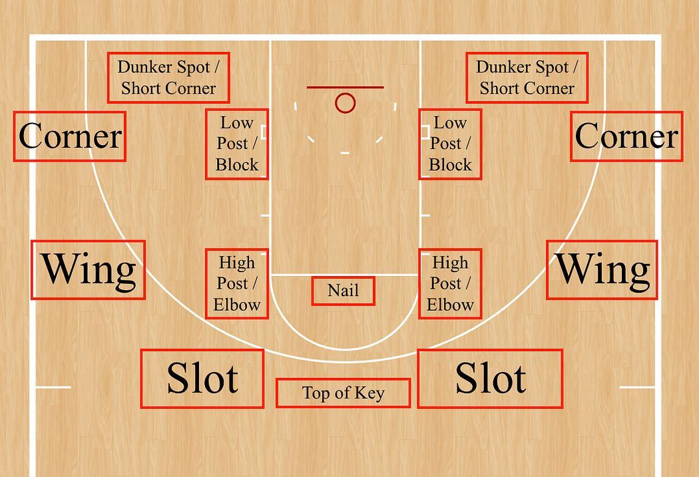
Ball Knowledge Terminology#
- Terms to know to talk ball but are not diagrammed in this document.
- ATO
- A special play call after a timeout.
- Back Screen
- An off-ball screen for a cutter going to the hoop.
- BLOB
- Baseline Out Of Bounds play.
- Face Cut
- A cut in front of the defender, opposite of a back cut.
- Flip
- A pass followed by a quick pass back or (DHO) – Followed by a screen, usually a step-up.
- Gap
- The space between the ballhandler and their closest teammate on the perimeter.
- On the Line
- Defenders deny passes by positioning between the ballhandler and their mark.
- Reject
- A cutter/backdoor move away from a screen or a ballhandler driving opposite a pick.
- Ricky
- Re-Screening for same player – can be on-ball screens or off-ball screens
- Rim Runner
- A big who sprints in transition for an early scoring opportunity.
- Scram Switch
- A switch to fix a mismatch from an earlier defensive switch – switching back
- Screen the Screener (StS)
- A player sets a screen and then receives one from another teammate.
- Shell
- A defense’s standard alignment.
- Slip
- A cutter moves to the basket instead of setting a screen.
- SLOB
- Sideline out-of-bounds play.
- Strong Side
- The side of the court where the ball is.
- Trailer
- A big who trails the play and positions near the top of the key instead of running straight to the rim.
- Weak Side
- The side of the court opposite the ball.
- Up the Line
- A defender positions closer to the ballhandler instead of hugging their matchup.
Ball Screen Defense: Ball Handler’s Defender
Zero Man Removed#
Key Concepts
- Zero Man Removed or “Going over the top” refers to a ball screen defensive technique where the on-ball defender fights over the top of the screener instead of going under.
- There are zero people between the ball handler and his defender, hence Zero Man Removed
- This is typically used against dangerous shooting guards to prevent open 3s and maintain ball pressure
- Going over the screen is one of the most common and essential coverages in pick-and-roll defense, especially when facing high-level shooters or creators.
Goals
- Stay attached to the ballhandler
- Prevent pull-up 3’s
- Funnel the drive into help defense
Key Concepts
- On-Ball Screens
- Pressure the Ball – Stay tight on the ballhandler to disrupt rhythm.
- Angle your body to force ballhandler over the screen – do not allow reject.
- Funnel into Help – Force the dribbler into the coverage (e.g., Drop, Hedge, or At the Level).
- Top Lock or Jump the Screen – Use footwork and angles to beat the screener to the spot.
- Communicate the Screen Early – Defender must hear/feel the call from the big.
- Rearview Contest or Recovery – Stay on the ballhandler’s hip and contest from behind if needed Off-Ball Screens
- Get Connected– Make and maintain contact with shooter coming off the off-ball screen.
- Corner Pocket– Position yourself in pocket away from screen, you won’t get hit by the screen when doing this.
- Sprint – Requires 100% effort to get through
- Get back – Once through the screen, need to get back into defensive position.
When to Use
- Against pull-up shooters (Steph, Dame, Trae, etc.)
- When using Drop, Hedge, or At-the-Level screen coverages
- Against guards who prefer 3s to drives
- In middle or side ball screens where help can rotate
- When you want to funnel into rim protection
SWOT Analysis
Strengths
- Takes away easy 3-point pull-ups
- Keeps pressure on ballhandlers
- Allows help defense to step up and protect the paint
- Works well with Drop or Hedge coverages
- Disrupts flow of quick-hitting PnR offenses
Weaknesses
- Requires elite screen navigation – bad footwork = foul or open shot
- Can be punished if big doesn’t step up or contain properly
- Vulnerable to rejects or snake dribbles
- Leaves defenders behind the play if communication is late
- Can allow quick rollers to get downhill before help rotates
Opportunities
- Defending Elite Shooters
- Pairing with Rim Protectors in Drop
- Late-Clock Situations
- With Strong On-Ball Defenders
Threats
- Miscommunication
- Slow Recovery or Lazy Chase
- Over-Aggressive Bigs
- Smart Guards with Re-Screening or Reject Skills
Final Thoughts
- Zero Man Removed is a critical on-ball and off-ball technique that helps defenders contain high-level shooters and pick-and-roll creators. When executed correctly with a big in proper coverage, it eliminates the most dangerous scoring option: the pull-up 3.
- Perfect for teams that prioritize rim protection, perimeter pressure, and strong communication — and a must-have in any defensive toolbox.
One Man Removed#
Key Concepts
- One Man Removed or “Going under” the ball screen refers to a defensive technique where the on-ball defender navigates under the screener, instead of fighting over the top. This is primarily used to contain non-shooters, take away drives, and deny straight-line penetration
- Defender goes directly under the ball screen after faking going over the top – leaving one man (screener) between him and his defender, hence the name One Man Removed
Goals
- Protecting the paint
- Playing percentages.
- When the ballhandler is not a consistent pull-up shooter, going under the screen encourages long jumpers while preventing penetration.
- Use when ball screens happen multiple feet away from the 3-Point line
- Use to guard dynamic shooters as well… should always switch up coverages to confuse teams and not allow them to make permanent judgements
Key Concepts
- On-Ball Screens
- Gap & Contain Mentality – Prioritize staying the ball and the basket.
- Screen Anticipation – Go under early and in rhythm to avoid getting pinned.
- Fake Zero, Go One – faking zero man and going one man makes it harder for offensive players to make quick reads and for opposing coaches to adjust.
- Contest the Jumper, Take Away the Drive – Force the ballhandler to prove they can hit contested shots .
- NEVER GO UNDER BALL SCREENS BELOW THE 3-POINT LINE
- Off-Ball Screens
- Fake Zero, Go One – faking zero man and going one man at the point of the screen makes it harder for offensive players to make quick reads and for opposing coaches to adjust.
- Screen Anticipation – Go under early and in rhythm to avoid getting pinned.
When to Use
- Against ballhandlers who can’t shoot off the dribble consistently
- When protecting the rim is the defensive priority
- When fatigue, foul trouble, or matchups make over-the-top navigation too risky
- In early clock actions, where you want to slow tempo and control flow
- As part of a Drop, Weak, or ICE ball screen coverage
SWOT Analysis
Strengths
- Shuts down drive-first guards
- Limits fouls and chasing – defender stays in front, not behind
- Allows big to stay near the paint (drop coverage)
- Encourages lower-efficiency shots (pull-up 3s or deep midrange)
- Easier to execute with guards who struggle navigating screens
Weaknesses
- Allows uncontested pull-up 3s if the guard is a capable shooter
- Leaves too much space if not timed properly
- Can lead to re-screens or step-up screens that punish the under
- Doesn’t disrupt rhythm — ballhandlers get downhill without ball pressure if misjudged
- Requires perfect scouting — one mistake can lead to a hot hand
Opportunities
- Against Non-Shooting Guards or Bigs in DHOs
- In Drop Coverage Systems
- To Manage Fatigue or Foul Risk
- Against Ball Screens Set Far From the Rim
- For Defensive Flexibility
Threats
- Hot-Shooting Guards
- Re-Screens or Step-Up Screens
- Snakes and Hesitation Moves
- Spacing Teams with Multiple Shooters
- Confused Communication or Late
- Drop.
Final Thoughts
- One Man Removed is a smart, low-risk coverage when used against the right personnel. It prioritizes paint protection and disciplined positioning, allowing your defenders to stay between the ball and basket without fighting through contact.
Use it to
- Control tempo
- Force tough pull-ups
- Stay out of foul trouble
- Neutralize non-shooters
- Anchor a drop-heavy defensive system
- It’s a key weapon in any defensive coach’s arsenal — especially when paired with strong scouting and a rim-protecting big.
Two Man Removed or Press Up#
- Two Man Removed or “Press Up” refers to a ball screen defensive technique where the on-ball defender fights under the ball screen but the ball screener’s defender is pressing up into the ball screener.
- There are two people between the ball handler and his defender, the screener and the screener’s defender hence Two Man Removed
- This is typically used against dangerous driving guards to prevent them from getting to the basket or creating off the ball screen.
- ONLY USE WHEN BALL HANDLER IS A NON-SHOOTER
Goals
- Prevent creation from Ball Handler
- Prevent drives
Off-Ball Screen Terminology#
Off-Ball Screen
- Zero Man Removed
- One Man Removed
- Two Man Removed or Press Up
- The Off-Ball Screen terminology is the exact same as on-ball. Same principles apply to executing each variation of getting through off-ball screens as their On-Ball counterpart.
- Zero Man Removed: Defender goes over top the screener and is connected to the shooter coming off. Another name is lock and trail.
- One Man Removed: Defender goes under the screen but over top his teammate who is guarding the screener.
- Use this when guarding shooters depending on the screening angle. Mix it in with Zero Man Removed to keep shooters guessing.
- Two Man Removed or Press Up: Defender goes under both the screener and his teammate guarding the screen.
- Teammate guarding the screen is pressed up against the screener to not allow slip. Only use when guarding non-shooters.
Zero, One and Two Man Removed: Examples#
Zero Man Removed
- Defenders slide through connected to the offensive player.
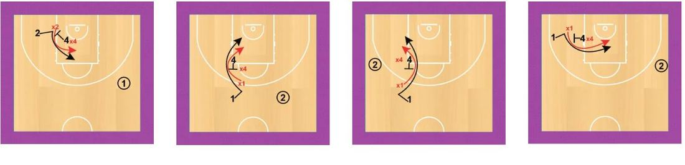
One Man Removed Examples
- Defender slides under the screen and offensive player overtop his teammate to beat the to his spot
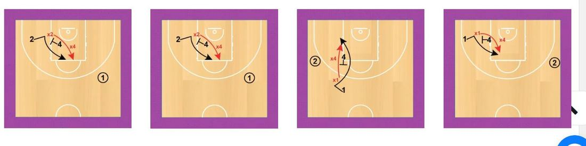
Two Man Removed Examples
- x4 “Presses Up” against the screener to minimize space between man coming off screen and x1 going Two-Man removed
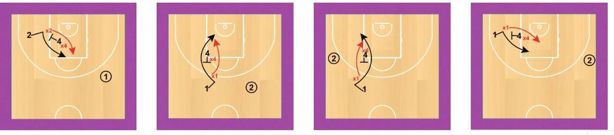
Ball Screen Defense: Screener’s Defender
Hard Hedge#
Definition A pick-and-roll defensive coverage where the screener’s defender aggressively steps out to cut off the ballhandler, forcing them away from the basket before recovering to their man.
Synonyms Show and Recover, Hedge.
Why It Works
- Forces the ballhandler away from the basket, disrupting offensive flow.
- Prevents easy pull-up jumpers or drives from skilled ballhandlers.
- Effective against elite shooters in pick-and-roll situations.
How It Works
- X1 fights over the ball screen from 5
- X5 Hard Hedges – body facing sideline, with bottom foot connected tot the top leg of 5
- 1 is forced to dribble around X5
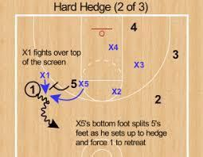
SWOT Analysis
Strengths
Disrupting the BH's Rhythm
- Ability to disrupt the BH’s offensive flow. The aggressive hedge forces the BH to change direction, slow down, or make a quick decision under pressure.
Preventing Easy Drives to the Basket
- Prevents BH from easily turning the corner and driving to the basket after using the screen. This is especially useful against players who are strong at attacking the basket.
Takes Away the PnR
- Puts pressure on the BH and temporarily "splitting" the screen disrupts the timing of the roll and prevents the screener from getting easy looks near the basket.
Encourages Turnovers
- Forces the BH to make rushed decisions. Forcing a bad pass, mishandling the ball, or getting caught in a trap, this pressure can lead to turnovers.
Provides Time for the On-Ball Defender to Recover
- The hard hedge buys time for the on-ball defender to recover after getting screened .
Effective Against Non-Shooting BHs
- Hard hedging is particularly effective against players who aren't strong shooters. If the BH isn’t a shooting threat, the defense can afford to hedge aggressively
Takes Advantage of Strong Defenders
- This strategy is often used when a team has a quick, agile center or forward who can hedge aggressively and still recover quickly.
Weaknesses
Slow Recovery by the Hedge Defender
- After the hedge, quickly recover to guarding the screener. If the defender is late – lobs or rolls will be open
Open Shots for the BH
- If the hedge is poorly timed or executed, the BH may have enough space to either shoot a quick pull-up jumper or reset and attack the defense again. If the BH is a good shooter, they can punish the defense by taking open jump shots.
Extra pass to Big
- Hard hedging is vulnerable to quick pass from BH to another perimeter player who then passes to the big who is rolling to the basket.
Overcommitting to the Hedge
- If the hedge is too aggressive or the defending big man overcommits, it can leave the BH to split the screen or open passing lanes for the screener or other teammates.
Exploiting Non-Shooting Big Men
- If the big man defending the screen isn't a good perimeter defender or a good recoverer, the offense can exploit that by pulling the big man out of the paint with a shooter or by using the PnR to create open space for outside shots or drives.
Fatigue
- Hard hedging requires a lot of energy, as the defender has to sprint out, hedge hard, then quickly recover or rotate. This can lead to fatigue, especially against fast-paced teams or in up-tempo games.
Opportunities
Create Turnovers
- A well-timed hedge can force the ball handler into tough decisions, potentially leading to forced passes, travel calls, or turnovers.
Confuse the Offense
- A hard hedge can make it difficult for the offense to predict how to attack the defense, creating confusion and miscommunication. This can lead to mistakes, such as improper screen usage or delayed offensive execution.
Limit High-Impact Players
- Hard hedging is particularly effective when defending a star ball handler who relies on the pick-and-roll to generate offense. The defense can limit the impact of such players by taking away their preferred action.
Force the Offense to Play at a Slower Pace
- The hedging strategy can disrupt the offense’s rhythm and force them to play at a slower pace, which benefits the defense by reducing quick scoring opportunities and forcing the offense to execute under pressure.
Threats
Opponents with Quick Decision Makers
- Teams with ball handlers who make quick decisions or have a high basketball IQ (e.g., exceptional passers) can exploit the hard hedge by quickly passing out of it to open teammates for good shots or cuts.
Exploiting the Weaknesses of the Hedge
- If the hedging defender doesn’t recover quickly enough, or the ball handler splits the hedge, it could leave the defense scrambling and create open lanes to the basket for easy points or a high-percentage shot.
Big Men Shooting from Range
- If the screener is a stretch big who can pop, the defense might struggle to close out effectively, allowing for open three-point shots, which could be exploited by good shooting teams.
Offensive Mismatches
- A hard hedge can result in mismatches, particularly when a big defender is forced to guard a smaller, quicker player or vice versa. This can create opportunities for isolations, attacks, or passes into open lanes.
Risk of Overcommitting
- If the hard hedge is executed too aggressively, the defense might overcommit and leave parts of the floor open for quick ball reversals or backdoor cuts
When to Use
Hard hedge is an effective defensive strategy for teams that want to
- Disrupt elite pick-and-roll ballhandlers and force them to give up the ball.
- Limit three-point pull-ups from players like Trae Young and Stephen Curry.
- Create turnovers and force bad passes leading to transition opportunities.
- Control the tempo against teams that rely heavily on one playmaker.
- However, it requires elite defensive communication and fast rotations. If the offense counters with quick passes, ghost screens, or short-roll playmakers, teams may need to adjust by:
- Switching against playmaking bigs.
- Recovering quickly to contest mid-range shots.
- Pre-rotating weak-side defenders to take away easy passes.
- When executed properly, hard hedge takes away primary ballhandlers, forces turnovers, and disrupts offensive flow, making it a valuable defensive weapon for aggressive defensive teams.
Pairs well with Zero Man Removed
Shadow#
- Coach Chang’s recommendation
Definition A pick-and-roll coverage where the screener’s defender positions themselves at the level of the screen, pressuring the ballhandler while recovering to their original assignment.
Synonyms At the Level, Up to Touch, Catch Hedge, shadow coverage.
Why It Works
- Prevents the ballhandler from easily attacking downhill, limiting penetration.
- Forces contested shots by making pull-up jumpers or floaters the primary scoring option.
- Disrupts pick-and-pop bigs, making it harder for them to get clean looks.
- Effective against average ballhandlers, as it them into uncomfortable decisions.
How It Works
- The on-ball defender fights over the screen, staying attached to the ballhandler.
- The screener’s defender (5) steps up to the level of the screen, preventing an immediate drive or pull-up jumper.
- The ballhandler is forced to go sideways or retreat, disrupting the rhythm of the offense.
- Once the on-ball defender recovers back to the ballhandler, the screener’s defender (5) drops back to their original man.
- If necessary, weak-side help rotates to contest passes or lobs.

SWOT Analysis
Strengths
- Prevents Direct Drives to the Basket
- By positioning slightly below the screen, the big stays in front of the ballhandler, making it harder for them to turn the corner.
- Forces the ballhandler to go sideways rather than downhill, limiting immediate scoring threats.
- Particularly effective against quick guards who thrive on attacking the rim
- Neutralizes High-Speed Pick-and-Roll Actions
- The ballhandler sees a big defender positioned between them and the rim, preventing a straight-line drive.
- Helps slow down guards who try to use speed and momentum off the screen.
- Effective against transition ball screens where the offense tries to push the pace quickly.
- Reduces Mismatches Compared to Hard Hedge or Blitz
- Unlike a hard hedge or trap, the shadow coverage does not require the screener’s defender to fully commit, which reduces the risk of mismatches.
- The big can recover more easily if the ballhandler makes a pass or if a slip screen is executed.
- Helps teams keep their defensive matchups intact without excessive rotations.
- Forces Mid-Range Jumpers & Low-Percentage Shots
- Since the ballhandler cannot turn the corner, they often settle for pull-up jumpers, floaters, or contested mid-range shots.
- This is a win for the defense, as these are generally lower-efficiency shots compared to layups or three-pointers.
- Particularly effective against ball-dominant guards who struggle with mid-range efficiency.
Weaknesses
- Can Be Exploited by Elite Mid-Range Shooters
- If the ballhandler is comfortable shooting pull-ups, the shadow coverage becomes ineffective.
- Guards like Chris Paul, Devin Booker, and Kevin Durant excel at punishing shadow coverage with automatic mid-range jumpers.
- If the on-ball defender gets caught on the screen, the ballhandler gets an open mid-range shot every time.
- Struggles Against Pick-and-Pop Bigs
- If the screener pops instead of rolling, the big defender may be too far away to recover
- Against teams with stretch bigs, the shadow coverage leaves them more open for 3-Pointers
- Requires quick rotations from weak-side defenders, which can lead to breakdowns if they’re slow.
- Requires Strong On-Ball Defense
- The on-ball defender (x1) must fight through the screen quickly to recover and prevent an open shot.
- If the on-ball defender gets caught, the ballhandler can easily attack the space behind the screen, putting the defense in rotation.
- If the ballhandler has elite footwork and handles they can manipulate the defender and create open looks.
- Can Lead to Open Roll Opportunities for Bigs
- If the shadow coverage is too soft, the screener can roll into open space.
- This forces weak-side defenders to rotate early, creating kick-out three-point opportunities.
- Teams with great passing bigs can exploit this by hitting shooters off the short roll.
Opportunities
- Works Well Against Quick Guards Who Struggle in Mid-Range
- Guards who rely on getting all the way to the rim struggle against shadow coverage.
- Since they are forced into contested pull-up jumpers, shadow coverage takes away their biggest strength
- Perfect for teams that want to keep the ballhandler in front while avoiding excessive rotations.
- Effective for Teams with Strong Rim Protectors
- Teams with elite rim protectors can afford to use shadow coverage because:
- They force ballhandlers into floaters, which can be contested.
- If the ballhandler gets past the screen, a rim protector is waiting at the basket.
- This allows the defense to stay solid without committing two defenders to the ball for too long.
- Can Be Used to Disguise Other Coverages
- Teams can start with a shadow coverage look but mix in different coverages throughout the game, such as:
- Late switch (big stays flat, then switches once the ballhandler commits).
- Soft trap (appears to be a shadow coverage, but the big steps up last second).
- Ice Coverage hybrid (forcing sideline but keeping the big in flat containment).
- Useful Against Teams That Lack Elite Passing Bigs
- If the roller is not a great passer, shadow coverage prevents easy assists from the short roll.
- This forces the ballhandler to make tougher reads rather than hitting a skilled playmaker in the pocket.
Threats
- Ballhandlers Who Manipulate Defenders
Elite playmakers like can
- Manipulate the hedge by changing pace.
- Drag the big defender further out, creating more space for the roller.
- Use their vision to hit shooters or cutters before the defense recovers.
- If the on-ball defender gets caught, these guards can punish shadow coverages.
- Short Roll Playmakers Expose shadow coverage
- Bigs who are great passers in the short roll make this coverage difficult.
- Since the big is positioned lower, the short roll becomes an easy passing opportunity.
- If the defense collapses, these playmakers find open shooters on the weak side for three-pointers.
- Quick Passing and Ball Reversals Can Stretch the Defense
- If the offense moves the ball quickly, the weak-side defenders can’t rotate fast enough to contest shots.
- This makes shadow coverage less effective against elite shooting teams.
- Teams Can Use a Ghost Screen to distort Shadow coverage
- Instead of setting a normal screen, the screener can fake a screen and slip away, known as a ghost screen.
- This confuses the defenders, leaving the shooter open for an uncontested jumper.
- Teams that use ghost screens effectively exploit shadow coverage by avoiding the screen altogether.
When to Use
- Shadow ball screen coverage is an effective strategy when used correctly.
It works best
- Against Elite Shooters
- When You Want to Contain, Not Trap
- When Paired with Strong On-Ball Pressure
- With Mobile Bigs Who Can Move Laterally
- Against Early-Clock PnR
- However, it requires strong on-ball defense and quick help rotations.
- Requires high communication between the guard and big.
- Vulnerable if your taggers are late on the roll.
- Must adjust if ballhandler snakes the screen or rejects.
- Shadow Coverage is a balanced, modern coverage that blends containment with flexibility — perfect for disrupting rhythm without overcommitting.
Pairs well with Zero Man Removed, One Man Removed
Ice Ball Screen#
Definition A PnR defense where the on-ball defender forces the ballhandler toward the sideline, while the screener’s defender drops back to protect the basket.
Synonyms Blue, Push, Down, Channel.
Why it Works
- Forcing the ballhandler to the sideline, limiting passing options.
- Encouraging inefficient long two-pointers.
- Denying middle penetration, reinforcing a no-middle defensive scheme.
Variations
- Ice to Blitz – After forcing sideline, the screener’s defender traps the ballhandler.
- Ice to Switch – The two defenders switch matchups after sideline.
- Ice to Touch – The screener’s defender plays at the level of the screen
How It Works
- Used on side pick-and-rolls
- The on-ball defender “ices” the screen, preventing middle penetration.
- The screener’s defender drops back, staying between the ball and the basket.
- Once the on-ball defender recovers, the big returns to his man.
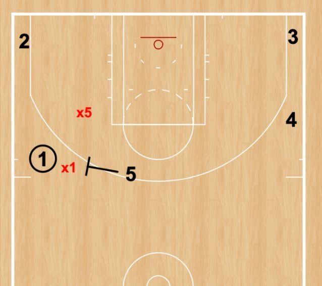
SWOT Analysis
Strengths
- Prevents Middle Penetration (Forces Sideline & Baseline)
- By "icing" the screen, the ballhandler is denied access to the middle of the floor, which is where most playmaking and pick-and-roll advantages occur.
- This forces the offense to operate outside of their comfort zone, making it harder to create high-percentage shots.
- Works best for teams that emphasize a No Middle Defensive Philosophy
- Neutralizes Pick-and-Roll Playmakers
- Icing takes away the primary advantage of the pick-and-roll, which is allowing the ballhandler to use the screen and turn the corner.
- Guards who rely on ball screens find it harder to create because they are being funneled into help defense instead of using the screen.
- If executed well, the ballhandler is forced into a contested mid-range jumper, floater, or tough sideline pass.
- Helps Bigs Stay Near the Paint (Protects the Rim)
- The big defender drops back in a contained position, staying close to the rim to deter easy layups.
- This is highly effective for teams with elite rim protectors who can challenge shots inside.
- By keeping bigs near the basket, icing reduces fouls and limits offensive rebounding opportunities.
- Disrupts Offense & Reduces Roller Effectiveness
- Since the screener’s defender is already in a drop position, rolling bigs have less space to operate.
- The ballhandler often has no angle for a pocket pass or lob, taking away easy roll finishes.
- Forces the offense to reset or pass to a weak-side shooter, extending the defensive possession.
Weaknesses
- Leaves the Weak Side Vulnerable (Requires Strong Rotations)
- Icing a screen forces help defenders to rotate from the weak side, exposing open shooters if rotations are late.
- If teams have elite weak-side shooters, icing can lead to uncontested three-point attempts.
- Requires disciplined weak-side help and fast X-out rotations to contest perimeter shots effectively.
- Struggles Against Pick-and-Pop Bigs
- If the screener pops instead of rolls, the icing coverage leaves big defenders too deep, allowing open three-point shots.
- Stretch bigs like can easily exploit this by spacing the floor.
- If the on-ball defender gets screened effectively, the ballhandler can make a simple pass to the popping big for a wide-open shot.
- Gives Up Mid-Range Jumpers
- Since icing forces the ballhandler away from the rim and toward the sideline, many teams counter it by taking pull-up mid-range jumpers or floaters.
- Guards who excel in the mid-range, making them difficult to defend using this strategy.
- If a team lives off mid-range shooting, icing may be less effective than a blitz or switch coverage.
- Requires Strong On-Ball Defense
- The on-ball defender must execute the coverage correctly, cutting off the middle and preventing rejection of the screen.
- If the ballhandler rejects the ice coverage and goes middle, the defense breaks down.
- A weak on-ball defender allows the offense to attack downhill anyway, reducing the effectiveness of icing.
Opportunities
- Works Best Against Ball-Dominant Guards
- Icing is perfect for containing elite pick-and-roll playmakers, such as:
- Luka Dončić (forces him to the sideline, limiting vision).
- Ja Morant (takes away driving angles).
- Trae Young (forces him into mid-range shots instead of floaters or lobs).
- Against teams that rely heavily on one player creating off ball screens, icing disrupts their offensive rhythm.
- Highly Effective for Teams with Strong Rim Protection
- Icing is ideal for teams with elite shot blockers since it funnels the offense into the paint, where the rim protector is waiting.
- Works exceptionally well for teams with bigs like Brook Lopez, Rudy
- Gobert, and Jaren Jackson Jr., who thrive in drop coverage.
- Can Be Used to Force Non-Shooters Into Tough Shots
- If the ballhandler is a poor pull-up shooter, icing forces them into the exact shots they don’t want to take.
- Example: If Russell Westbrook or Ben Simmons is coming off a ball screen, icing forces them into low-efficiency mid-range shots or floaters, which is a win for the defense.
- Can Be Used with Trapping and Recovery Adjustments
- If an elite scorer gets too comfortable attacking the sideline, teams can:
- Blitz the ballhandler (forcing them to pass immediately).
- Pre-switch the screen, putting a better defender in the action.
- Trap and recover, momentarily forcing a pass before getting back to matchups.
Threats
- Offenses Can Ricky the Screen (Rejecting the Ice Coverage)
- Smart teams "flip" the screen angle, forcing the on-ball defender to react late.
- This allows the ballhandler to go middle, breaking the ice coverage and collapsing the defense.
- Weak-Side Shooters Can Burn Ice Coverage
- If help defenders collapse too much, offenses find open shooters on the weak side.
- This makes icing less effective against teams that emphasize corner threes.
- Smart Bigs Can Counter by Short Rolling
- Instead of rolling hard to the rim, the screener can short roll to the free-throw line, receiving an easy pass in open space.
From here, they can
- Shoot a short jumper.
- Kick to a shooter if help collapses.
- Drive for a layup if no one steps up.
- This is how teams use big playmakers like Nikola Jokić and Domantas
- Sabonis to exploit icing.
- Elite Mid-Range Guards Neutralize Ice Coverage
- If a guard is comfortable taking mid-range shots, icing is less effective.
When to Use
- Ice ball screen coverage is an effective defensive strategy for teams that want to:
- Keep the ball on the sideline and deny middle penetration.
- Force inefficient mid-range shots and floaters.
- Reduce pick-and-roll playmaking opportunities.
- Keep rim protectors near the basket without overcommitting.
- However, it requires disciplined on-ball defenders and quick weak-side rotations. If teams counter with skip passes, stretch bigs, 45 (9) Cut or ghost screens, adjustments must be made. Against these teams, defenses may need to:
- Show more at the level of the screen to contest shooters.
- Pre-rotate weak-side defenders to take away skip passes.
- Switch against pick-and-pop bigs to avoid open threes.
- When executed properly, Ice coverage forces inefficient shots, keeps the ball out of the middle, and disrupts pick-and-roll-heavy offenses, making it a key tool for elite defensive teams.
Drop Coverage#
Definition A pick-and-roll defensive strategy where the screener’s defender (big) stays back, "dropping" toward the basket to contain penetration and protect the rim.
Synonyms Drop, Deep Drop, Soft Coverage.
Why It Works
- Protects the rim, making it harder for ballhandlers to finish inside.
- How It
- Forces the offense into mid-range jumpers, which are lower-efficiency shots.
- Limits fouls on bigs, as they avoid hard contests on the perimeter.
- Works well against non-shooting guards, who struggle to exploit the space given.
Works
- The on-ball defender fights over the screen, trying to stay attached to the ballhandler.
- The screener’s defender (5) drops back toward the paint, staying between the ballhandler and the basket.
- The ballhandler is encouraged to take a mid-range shot or floater rather than attacking the rim.
- If the ballhandler hesitates or passes, the big recovers to their original man (5) and resets the defense.
- Weak-side defenders may "tag" the roller to delay an easy lob or dump-off pass.
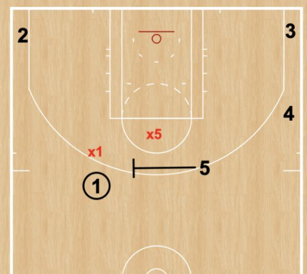
SWOT Analysis
Strengths
Protects the Paint
- Drop coverage prioritizes protecting the basket, keeping the big man closer to the rim to guard against drives and post-ups. This is especially useful when defending against aggressive rim attackers or high-flying athletes.
Limits Easy Layups
- By dropping the big man into the paint, the defense prevents easy layups and forces ball handlers to take longer, more contested shots. This helps avoid giving up high-percentage shots near the basket.
Prevents Fast Breaks
- With the center staying closer to the basket, there’s less chance of a fast break situation if the ball handler pulls up for a jumper or makes a quick pass.
- This helps to maintain defensive integrity even in transition.
Good for Non-Shooting Bigs
- Drop coverage is effective against non-shooting big men, as they don't pose an immediate threat on the perimeter. It allows the big man to sag off and defend the rim without worrying about an outside shot.
Effective Against Pick-and-Roll
- The strategy is designed to defend pick-and-roll actions by forcing the ball handler to take mid-range jump shots instead of getting to the rim or creating easy opportunities for the roller.
Reduces Fouls
- Because the big man is not as involved in high-pressure pick-and-roll situations, drop coverage often results in fewer fouls committed compared to more aggressive strategies like switching or hard hedging.
Weaknesses
Vulnerable to Pull-Up Jumpers
- If the ball handler is a proficient mid-range shooter, drop coverage can leave them wide open for pull-up jumpers. This strategy allows the ball handler space to comfortably shoot over the defending big man.
Exposes the Perimeter
- With the center dropped into the paint, the defense is vulnerable to three-point shooters, especially if the ball handler can make quick passes to open shooters. This can lead to open perimeter shots if the defense doesn’t rotate well.
Rebounding Challenges
- Since the big man is often close to the basket but not actively involved in contesting perimeter shots, it can lead to defensive rebounding issues, especially against teams that crash the boards aggressively after long jumpers.
Slower Rotations
- If the offense swings the ball quickly, the drop coverage can lead to slower rotations, which might leave shooters open on the perimeter. The defense may struggle to contest shots if the ball moves too fast.
Not Ideal for Quick, Versatile Bigs
- If the screener can pop to the three-point line or if they’re a mobile, versatile big man, drop coverage can leave them open for outside shots, exploiting the defense's hesitation to chase shooters on the perimeter.
Opportunities
Encourages Mid-Range Shots
- By forcing the ball handler into a mid-range shot, the defense may limit high-percentage opportunities around the rim. For offenses that struggle with mid-range shooting, this can be a valuable defensive strategy.
Defenders Can Stay in Position
- Since the defender on the ball handler fights through the screen and the big man drops back, defenders can maintain their positions, reducing the risk of mismatches or getting caught out of position.
Disrupting High-Speed Offenses
- Against offenses that rely on quick ball movement and attacking the rim, drop coverage can slow things down and disrupt their flow by forcing them into less efficient scoring
Tough for Non-Shooting Guards
- If the ball handler is not an elite shooter from mid-range or beyond the arc, drop coverage can work well by forcing them to take uncomfortable shots, reducing the offensive efficiency of less skilled scorers.
Exploitive for Weak Rollers
- If the roller after the screen is a poor finisher or does not roll to the basket effectively, the defense can afford to drop and stay compact in the paint, knowing the threat of the roll isn’t as dangerous.
Threats
Elite Ball Handlers with Range
- Skilled ball handlers with good range (i.e., capable of hitting pull-up jumpers or long-range shots) can exploit drop coverage by consistently knocking down mid-range or three-point shots, making the defense less effective.
Offensive Teams with Good Perimeter Shooting
- Against teams that excel in shooting from the perimeter, drop coverage can lead to a lot of open looks from beyond the arc. If the defense is slow to rotate or the ball is moved quickly, it can result in easy three-pointers.
Teams with Stretch Bigs
- When the screener is a stretch big (a player who can shoot from the outside), drop coverage allows them to pop to the perimeter, creating mismatches and forcing the defender to recover quickly or give up an open shot.
Quick Ball Movement and Passes
- If the offense is effective in swinging the ball quickly or making accurate passes out of the pick-and-roll, the drop coverage can be exploited. A quick kick-out to the perimeter or a well-timed pass to the roller could result in high-quality scoring chances.
Relying on a Slow Big Man
- The drop coverage relies on the big man being able to quickly recover after defending the initial ball screen. If the big is slow or not quick on their feet, it can lead to mismatches and easy opportunities for the offense to exploit.
When to Use
- Drop coverage is one of the most effective defensive strategies when used correctly. It’s best for teams that:
- Have an elite rim protector to anchor the defense.
- Face ballhandlers who struggle in the mid-range.
- Want to minimize defensive rotations and stay structured.
- Need to limit layups and protect against lob threats.
- However, drop coverage must be adjusted against teams with elite mid-range scorers, pick-and-pop bigs, or high-level playmakers. Against these teams, defenses may need to:
- Step up to contest mid-range jumpers.
- Use soft traps or show-and-recover tactics.
- Have weak-side defenders rotate quickly to cover shooters.
- When executed properly, drop coverage is one of the best ways to force inefficient shots, control defensive rebounding, and protect the paint, making it a core strategy for many elite defensive teams.
Switch#
Definition A defensive strategy where two defenders exchange assignments when a ball screen is set, preventing open shots and dribble penetration while keeping the offense in check.
Synonyms Switch Everything, Ball Screen Switch, Defensive
- Switch.
Why It Works
- Takes away open three-pointers and pick-and-roll
- How It advantages by preventing defenders from trailing behind.
- Disrupts offensive rhythm, forcing teams into isolations.
- Eliminates defensive confusion, simplifying defensive rotations.
- Ideal for teams with versatile, switchable defenders who can guard multiple positions.
Works
- When the offense runs a pick-and-roll or pick-and-pop, the on-ball defender and the screener’s defender "switch" assignments instead of fighting over or under the screen.
- The big defender takes the ballhandler, while the guard picks up the rolling or popping screener.
- The goal is to stay in front of the ballhandler, prevent easy pull-up jumpers, and avoid defensive breakdowns.
- If a mismatch occurs (e.g., a big switched onto a quick guard), the defense may:
- Scram Switch (send another defender to help).
- Show a quick double-team to force a pass.
- Force an isolation and contest the shot.
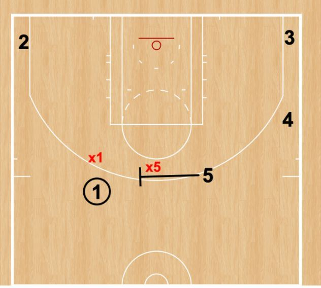
SWOT Analysis
Strengths
- Eliminates Screen Advantage
- Switching denies the offensive ballhandler a clear advantage, preventing them from using the screen to gain separation or downhill momentum.
- Takes away pocket passes, lobs, and drive-and-kick reads.
- Disrupts timing and continuity in pick-and-roll-heavy offenses.
- Simplifies Defensive Communication
- Rather than calling out coverages like “ice,” “drop,” or “hedge,” defenders simply switch matchups.
- Reduces the need for rotations or help, which helps maintain defensive structure and spacing.
- Effective Against Versatile, Positionless Offenses
- With increased spacing and shooting, offenses often use multiple screeners and shooters.
- Switching allows defenders to adapt fluidly to positionless basketball without creating gaps.
- Works well with teams made up of similar-sized, multi-positional defenders (e.g., Miami Heat, Boston Celtics, Golden State Warriors).
- Neutralizes Elite Ball Screens & Actions
- Dismantles actions like Spain PnR, Chicago action, and Double Drag, where traditional coverage might collapse.
- Reduces the effectiveness of movement shooters and two-man games like Luka + Powell or Harden + Capela.
Weaknesses
- Creates Mismatches
- The switch often results in a guard defending a big or a big defending a shifty guard.
- Skilled offensive players can exploit mismatches via post-ups or isolation.
- Teams may "hunt switches" to get their best scorer against the weakest defender.
- Requires High-Level Defensive Versatility
- Not every team can switch effectively—requires big men who can guard on the perimeter and guards who can hold their own in the post.
- A poor switch or hesitation can lead to confusion or wide-open shots.
- Rebounding Can Suffer
- Switching can leave smaller players in rebounding position, especially if a guard ends up boxing out a big.
- Teams may give up more second-chance points if not committed to team rebounding.
- Vulnerable to Slip Screens
- Offensive players can fake the screen and “slip” to the basket, exploiting confusion in the switch.
- If defenders pre-switch or hesitate, it can lead to easy rim finishes.
Opportunities
- Against Guard-Guard or Guard-Wing Screens
- Less mismatch risk when switching similar-sized players.
- Neutralizes actions like Zoom, Chicago, or Pistol that rely on guard-to-guard screening.
- When Defending Isolation or Iso-Heavy Stars
- Switch coverage allows teams to stay home on shooters and force isolation.
- Helps teams force low-efficiency 1-on-1 play instead of ball movement.
- Late-Clock or End-of-Game Situations
- Prevents quick scoring opportunities when the shot clock is low.
- Switching lets defenders stay in front without worrying about screen navigation.
- When Using Mobile Bigs and Switchable Wings
- Teams with bigs who can guard in space (e.g., Bam Adebayo,
- Draymond Green) thrive in switch-heavy schemes.
- Ideal for modern, switchable rosters like Boston, Miami, Toronto, or Golden State.
Threats
- Mismatch Hunting in Isolation
- Offenses will use ball screens to get their best scorer matched up with the worst defender, then attack.
- Players like Luka Dončić, Kevin Durant, Jayson Tatum, and
- LeBron James excel at exploiting mismatches created by switches.
- Post-Up and Seal Opportunities for Bigs
- After a switch, bigs can seal smaller defenders for deep post position or lob passes.
- Teams like Denver (Jokić) or Philadelphia (Embiid) use this to punish switches
- Quick Ball Movement to Exploit Rotations
- If a switch requires help rotations, the ball can be reversed quickly to create an open shot.
- Teams with elite passing (e.g., Warriors, Kings, Nuggets) punish defensive confusion.
- Ghost Screens, Slips & Inverted PnR
- Slip screens can exploit hesitation or miscommunication in the switch.
- Guards setting screens for bigs (inverted PnR) can lead to confusing mismatches.
When to Use
- Switching is one of the most effective defensive strategies when used correctly. It’s best for teams that:
- When both defenders can comfortably guard multiple positions (1–4 or even 1–5).
- Against teams that rely heavily on screening actions for creation.
- To simplify coverages in late shot clock or late-game situations.
- As part of a switch-heavy defensive scheme
- With positionless, switchable lineups that emphasize versatility.
- When executed properly, switchingis one of the best ways to control a game defensively.
Trapping#
Definition A defensive strategy where two defenders aggressively pressure the ballhandler to force a turnover, rushed decision, or pass to a less dangerous player.
Synonyms Blitz, Hard Trap, Double-Team.
Why It Works
- Disrupts the offense’s rhythm, making it difficult to run set plays.
- Forces ballhandlers into mistakes, leading to turnovers and transition opportunities.
- Effective against weaker ballhandlers, trapping them into rushed decisions.
- Works well against elite scorers, denying them easy shot attempts.
How It Works
- Two defenders aggressively trap the ballhandler, typically near the sideline, baseline, or after a screen.
- The ballhandler is forced to pick up their dribble or make a difficult pass under pressure.
- Weak-side defenders rotate to cover passing lanes and prevent an easy outlet pass.
- The defense looks to force a turnover, bad shot, or rushed offensive possession.
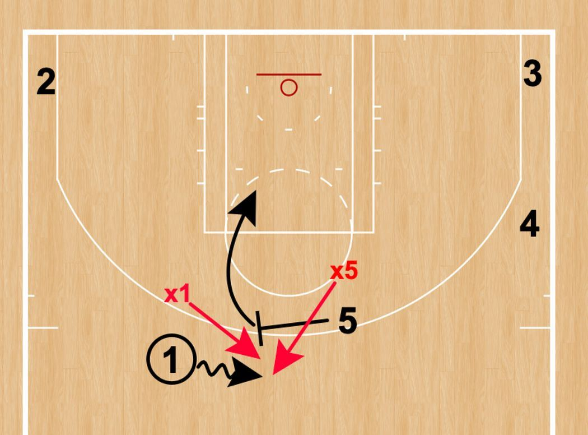
SWOT Analysis
Strengths
Disruptive to Ball Handlers
- Trapping puts immediate pressure on the ball handler, forcing them to make quick decisions, often leading to turnovers, bad shots, or rushed passes. It takes them out of their comfort zone.
Forces the Ball Out of the Playmaker’s Hands
- The primary goal of trapping is to take the ball handler (often the playmaker) out of the equation. By forcing them into a double team, it limits their ability to dictate the offense and creates opportunities to disrupt the flow of the play.
Reduces Pick-and-Roll Effectiveness
- A well-executed trap can neutralize pick-and-roll actions by preventing the ball handler from turning the corner or getting a clean pass to the roller. This forces the offense to reset or adjust to the defense’s pressure.
Takes Away Quick Scoring Opportunities
- Trapping is an aggressive defense that forces the ball handler to pass out of the trap, eliminating easy shots near the basket or from the ball handler’s preferred spots. The trap can make offenses hesitate and play at a slower pace.
Disrupts Offensive Rhythm
- Trapping is an intense and sudden strategy that can catch the offense off guard, disrupting their normal flow and forcing them to react, leading to potential breakdowns in their offensive execution.
Weaknesses
Exposes the Defense to Open Shooters
- Trapping forces defenders to collapse on the ball handler, which can leave shooters open on the perimeter. If the defense doesn’t rotate quickly enough, it may result in open three-pointers or quick passes to shooters in rhythm.
Vulnerable to Quick Ball Movement
- If the offense is capable of quickly reversing the ball or making accurate passes out of the trap, it can expose the defense’s vulnerability and create open shots or favorable mismatches for the offense.
Requires High Defensive Discipline
- Trapping requires perfect timing and communication. If any player on the trapping side of the defense is out of position or fails to rotate properly, it can lead to breakdowns and easy scoring opportunities for the offense.
Tiring for Defenders
- Trapping can be physically demanding, especially when done repeatedly. The defenders must constantly be active, switching quickly between helping in the trap and recovering to their own assignments, which can lead to fatigue over the course of a game.
Vulnerable to Roll Man
- If the defense traps effectively, but the roller (the screener rolling to the basket) is not adequately covered or has a clear path to the basket, it can lead to easy lob passes or finishes near the rim. The defense must account for this threat.
Opportunities
Create Turnovers
- The main strength of trapping is its potential to create turnovers. A well-executed trap can force errant passes, steals, or even rushed decisions from the ball handler, leading to easy fast-break opportunities.
Force the Offense into Isolation
- By trapping the ball handler, the defense can force the offense to play isolation basketball, often resulting in less efficient offensive plays. This is especially beneficial if the ball handler isn’t comfortable in one-on-one situations.
Force Bad Shot Selections
- The pressure of the trap can lead to contested, off-balance, or low-percentage shots as the ball handler is forced into uncomfortable situations. This helps lower the offensive team’s shooting efficiency.
Speed Up the Game
- Trapping can speed up the tempo, forcing the offense to react quickly. For teams that thrive on creating chaos or fast-break opportunities, trapping can play to their advantage by forcing the offense into a faster pace.
Make the Offense Unpredictable
- Trapping can force offenses to make quick decisions, causing confusion. If the ball handler or team is not prepared for it, this can lead to bad plays, quick turnovers, or miscommunication.
Threats
Elite Playmakers
- Against elite ball handlers or passers, trapping may not be as effective. If the ball handler can split the trap or make quick, accurate passes to open teammates, it can result in easy scoring opportunities for the offense.
Perimeter Shooters
- If the defense traps and doesn’t rotate quickly enough, it opens up wide-open shots for perimeter shooters. If the offense has strong outside shooters, this could result in multiple open three-pointers, undermining the effectiveness of the trap.
High-IQ Offenses
- Teams with high basketball IQs can exploit traps by recognizing when and where the trap is coming and quickly making the correct decisions (e.g., passing to open teammates or setting screens to free shooters). This can neutralize the trap’s effectiveness.
Roller and Screening Threats
- If the screener rolls to the basket effectively and the defense doesn’t cover the roller, it can lead to easy lobs or quick passes to a wide-open big man near the basket. A weak or slow rotation can easily result in a high-percentage shot for the roller.
Risk of Overcommitting
- Trapping requires defenders to commit to their positions, and if the trap is too aggressive or not timed well, the defense can become overcommitted, leaving them open to fast passes and weak-side cuts or mismatches.
When to Use
- Trap coverage is one of the most effective defensive strategies when used correctly. It’s best for teams that:
- Against high-usage guards who dominate pick-and-roll
- In late-game situations where you want to get the ball out of a star’s hands
- After timeouts (ATO) to surprise and force a reset
- When your team has long, athletic defenders who can rotate behind the trap
- When the offense lacks a strong short-roll passer or spacers who punish rotations
- When executed properly, trap coverage is one of the best ways to force TO’s, create chaos, and speed teams up, making it a core strategy for many elite defensive teams.
Weak#
Definition A pick-and-roll defensive strategy where the on-ball defender forces the ballhandler to use the screen in their weaker hand, limiting their effectiveness.
Synonyms Weak Coverage, Push Weak, Force Weak.
Why It Works
- Takes away the ballhandler’s preferred hand, reducing efficiency.
- How It
- Disrupts pick-and-roll actions, forcing difficult decisions.
- Limits pull-up jumpers and drive-and-kick opportunities.
- Forces teams to initiate offense from less ideal positions, breaking rhythm.
Works
- The on-ball defender shades the ballhandler, forcing them to reject the screen and dribble toward their weaker hand (typically the left for right-handed players).
- The screener’s defender (5) plays a drop or at-the-level coverage, containing penetration while preventing an easy drive to the strong side.
- Weak-side defenders help by tagging the roller or closing passing lanes.
- The goal is to neutralize primary ballhandlers by making them uncomfortable and reducing their ability to make plays.
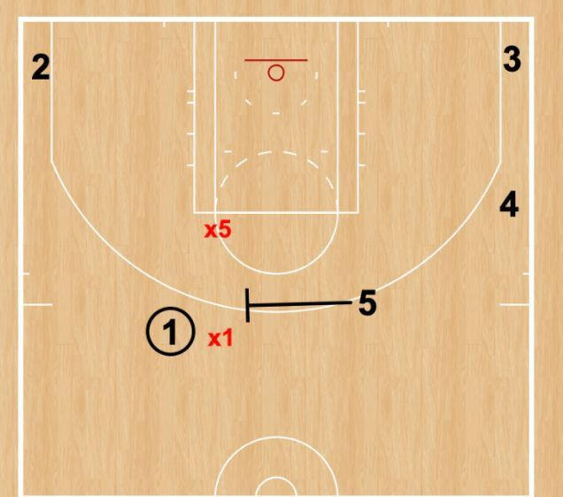
SWOT Analysis
Strengths
- Forces Ballhandlers Into Their Weak Hand
- Many elite guards rely on their dominant hand to create plays and attack (e.g., Luka Dončić, Ja Morant, Trae Young).
- By forcing them to their non-dominant hand, it reduces their ability to:
- Make high-quality passes.
- Get into comfortable shooting spots.
- Attack the paint with confidence.
- Limits Playmaking in the Pick-and-Roll
- The ballhandler is now working in an uncomfortable area, making it harder to:
- Throw accurate pocket passes to the roller.
- Execute lob passes.
- Find open shooters with cross-court passes.
- This leads to more mistakes, tougher shots, and fewer assist
- Reduces Pull-Up Three-Point Shooting
- Many elite shooters (e.g., Stephen Curry, Damian Lillard) thrive in pick-and-roll situations.
- By sending them weak, the coverage takes away their natural pull-up rhythm, making shots less efficient.
- Works best when paired with drop coverage or at-the-level containment to contest mid-range shots.
- Helps Prevent Middle Penetration
- Weak ball screen coverage is often part of a “No Middle” defensive philosophy, keeping the ballhandler out of the paint.
- Encourages the offense to play outside-in, taking away easy rim attempts.
- The big defender stays in a strong position to contest floaters and layups.
Weaknesses
- Struggles Against Elite Ambidextrous Guards
- Some guards are just as effective with both hands, making weak coverage less impactful.
- Against these types of players, forcing weak may not limit their effectiveness.
- Can Lead to Open Mid-Range Shots
- If the on-ball defender doesn’t recover quickly, the ballhandler can stop and pull up for an open mid-range jumper.
Works best when
- The big is at the level to contest the shot.
- The help defense is ready to rotate and take away easy kick-outs.
- If the team lacks elite rim protection, weak coverage can be exposed by teams with mid-range specialists
- Requires Strong On-Ball Defense
- The on-ball defender must stay attached to the ballhandler and prevent them from rejecting the screen.
- If the defender gets beat or fails to influence the direction, the offense can reset and attack in a better spot.
- Weak coverage is less effective against quick, shifty guards who can change direction easily (e.g., Kyrie Irving, De'Aaron Fox).
- Can Be Exploited by Short Roll Playmakers
- If the screener is a good passer, they can take advantage of weak coverage by:
- Catching in the short roll and making quick reads.
- Finding open corner shooters before help defense can rotate.
- Teams with playmaking bigs can break down weak coverage with precise passing from the short roll.
Opportunities
- Works Best Against Ball-Dominant Guards Who Favor One Hand
- If a ballhandler relies heavily on their dominant hand, weak coverage can take them out of their comfort zone.
Examples
- Trae Young (Forcing left limits his floater and lob passing ability).
- Ja Morant (Weaker outside shot when going left).
- Russell Westbrook (Less effective decision-making when forced right).
- This coverage is ideal against players who struggle when forced to their off-hand.
- Highly Effective for Teams with Strong Rim Protection
- If a team has elite rim protectors (e.g., Rudy Gobert, Brook Lopez, Jaren Jackson
- Jr.), weak coverage funnels ballhandlers toward shot-blockers.
- Encourages low-percentage floaters and contested layups rather than easy dunks or kick-outs.
- Can Be Used to Take Away Primary Playmakers
- If a team relies on one dominant playmaker, weak coverage can force them into uncomfortable passing angles.
- The big defender (5) stays home rather than stepping out, reducing playmaking options.
- Works well against teams that lack multiple ballhandlers who can create offense.
- Disrupts High-Tempo, Transition Offenses
Weak coverage can slow down transition-heavy teams by
- Forcing the ballhandler toward sideline help.
- Limiting fast-break scoring opportunities.
- Keeping the ball out of the middle of the floor, where transition playmakers are most dangerous.
- Helps teams dictate tempo against fast-paced opponents.
Threats
- Ballhandlers Who Reject the Screen
- If the ballhandler is quick enough to reject the screen, they completely avoid the weak coverage.
This leads to
- An open lane to the rim.
- A defensive scramble, forcing rotations.
- Defenses must have strong help rotations ready to cover middle penetration.
- Skilled Mid-Range Shooters Can Punish Weak Coverage
- If a team’s guards can hit pull-up mid-range jumpers, weak coverage won’t be as effective.
Examples of players who can attack weak coverage
- Chris Paul (Elite pull-up mid-range shooter).
- Devin Booker (Floater + mid-range game).
- Kyrie Irving (Can create his shot regardless of direction).
- If the big plays too deep, these guards can stop and shoot comfortably.
- Smart Playmaking Bigs Can Expose Weak Coverage
If the roller is a good passer, they can
- Short roll into space and kick out to shooters.
- Draw help defense and make a secondary pass.
- Teams like the Denver Nuggets (Nikola Jokić) and Sacramento Kings (Domantas Sabonis) thrive against weak coverage because their bigs are elite facilitators.
- Offenses Can Use Ghost Screens to Avoid Weak Coverage
- Instead of setting a solid screen, the screener can ghost the screen and slip into open space.
- This confuses defenders and creates instant shot opportunities for shooters.
- Teams like the Miami Heat and Phoenix Suns use ghost screens to counter weak coverage.
When to Use
- Weak ball screen coverage is an effective strategy when used correctly. It works best for teams that:
- Want to force ballhandlers into uncomfortable situations.
- Have elite rim protection to deter finishes at the basket.
- Face ball-dominant guards who struggle using their off-hand.
- Need to limit high-level playmaking in the pick-and-roll.
- However, it requires strong on-ball defense and quick help rotations. If teams counter with mid-range shooting, short-roll passing, or ghost screens, adjustments must be made.
- When executed properly, weak coverage neutralizes elite ballhandlers and forces offenses into inefficient shot attempts, making it a key tool for modern defensive schemes.
Screens
Brush Screen#
Definition A non-contact or minimal-contact screen where a player cuts close enough to an off-ball defender to disrupt their path without setting a traditional screen.
Synonyms Brush Cut
See Also Ghost Screen, Rub Screen, Veer Screen
Why It Works
- Avoids illegal screen calls by maintaining natural movement.
- Creates just enough disruption to free a shooter or ballhandler.
- Effective in motion offenses, especially when defenders are trailing.
How It Works
- 1 dribbles slot to slot
- 4 sets a brush screen by cutting right in front of 1’s defender
- 1 drives right off 4’s butt for maximum disturbance
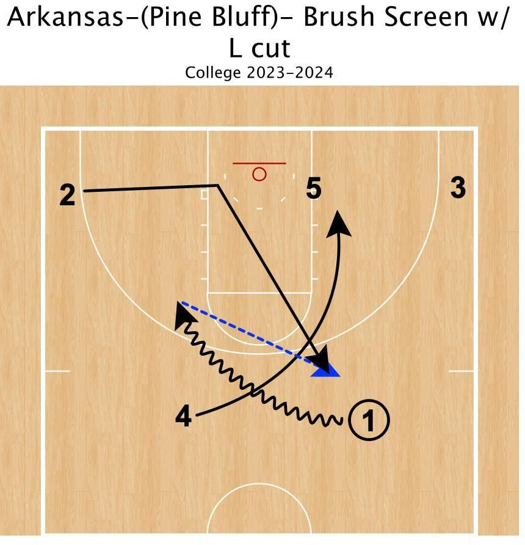
Butt Screen#
Definition A flat ball screen set with the screener’s back facing the ballhandler, creating a unique angle for driving or passing.
Synonyms Flat Screen, Back Screen PnR.
Why It Works
- Prevents defenders from anticipating the direction of the screen.
- Effective against switching defenses, as it forces miscommunication.
- Creates flexible offensive options, allowing the ballhandler to read the defense before attacking.
How It Works
- The screener (5) stands with their back to the ballhandler (1), rather than facing sideways like a traditional screen.
- The ballhandler can use the screen in either direction, making it unpredictable for defenders.
- The screener can then roll to the basket, pop for a shot, or set another screen.

Chin Screen#
Definition A backscreen that allows a player to cut from the weakside slot to the basket, ending up on opposite block
Why It Works
- Creates easy layups by forcing defenders to fight through screens.
- Counters overplays by making defenders chase off-ball movement.
- Can flow into additional actions, such as DHOs or staggered screens.
How It Works
- 5 sets Chin Screen for 2
- 5 then immediately sets ball screen for 1
- This is full Chin Action from the Princeton Offense
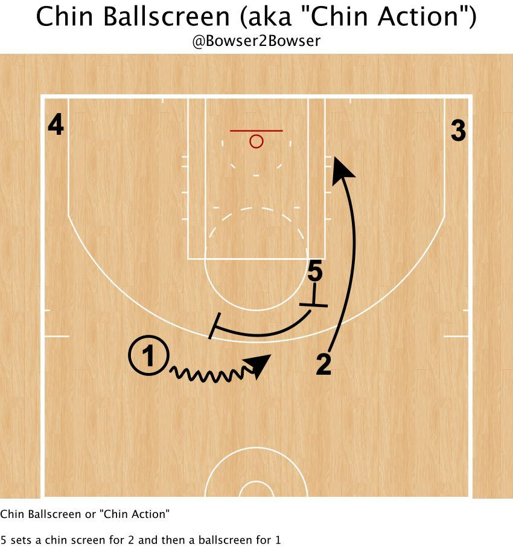
Cross Screen#
Definition An off-ball screen that helps a player cut horizontally across the court toward the ballhandler, typically into the post.
Why It Works
- Creates deep post touches for bigs, leading to high-percentage shots.
- Forces defensive switches or miscommunication, leading to mismatches.
- Can flow into secondary actions, such as pin-downs or pick-and-rolls.
How It Works
- 5 dribbles at and passes to 3
- 4 sets the Cross Screen for 1
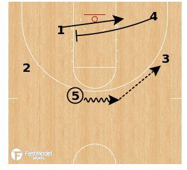
Double Drag#
Definition A two-person staggered ball screen set in semi-transition, with screens placed one after the other, not side-by-side.
Synonyms 77, 99, 55, Double (High) Ball Screen, Pick Pick, Double.
Why It Works
- Forces multiple defensive decisions in transition.
- Creates mismatches and open shots by spreading the floor.
- Can be adjusted with Spain PnR, pick-and-pop, or re-screens for added options
How It Works
- The ballhandler (1) uses two staggered screens in transition from 5 and 4.
- First screener rolls, second screener pops or rolls based on coverage.
- Can flow into Spain (backscreen for the roller) or Pistol actions.”.
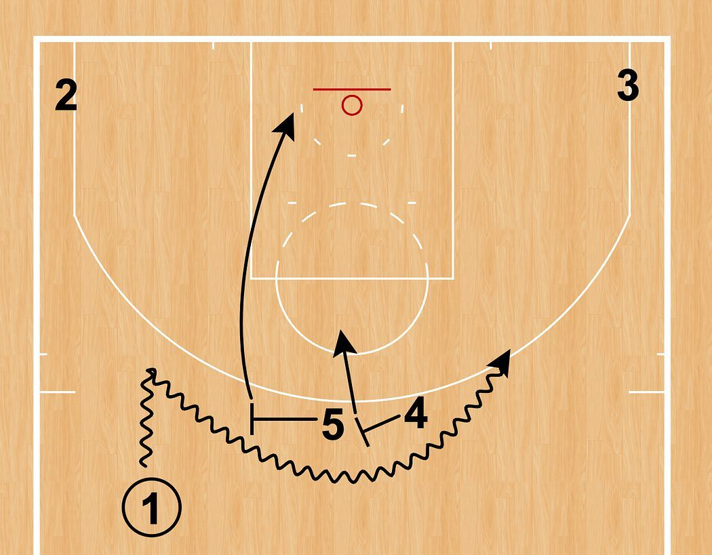
Down Screen#
Definition An off-ball screen set by a player near the baseline or mid-post for a teammate to cut toward the perimeter, usually to create an open jump shot or initiate offensive movement.
Synonyms Pin-Down Screen, Curl Screen.
Why It Works
- Creates open shots for perimeter players, particularly shooters.
- How
- Forces defenders to fight through screens, leading to miscommunication or late contests.
- Can be used in multiple offensive systems, including
- Floppy Action, Motion Offense, and Princeton
- Offense.
- Pairs well with secondary actions, such as dribble handoffs (DHOs) or pick-and-rolls, for additional scoring threats.
It Works
- 4 positions near the baseline or block and sets a screen for 2
- 2) moves off the screen toward the top of the key or wing, looking for a pass.
Depending on the defense, the cutter can
- Catch and shoot if open.
- Curl towards the basket if the defender trails too closely.
- Fade to the three-point line if the defender goes under the screen.
- Reject the screen and cut backdoor if the defense overplays.
- The screener can also slip to the basket if the defense switches or overhelps.
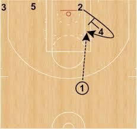
Drag Screen#
Definition A transition ball screen set for the ballhandler before the defense is fully set, typically near the top of the key or wing.
Synonyms Early Ball Screen, Transition PnR.
Why It Works
- Forces defenses to react quickly, often creating mismatches.
- Maximizes transition speed, leading to easier scoring chances.
- Can flow into various offensive actions, including double drag screens or early offense sets.
How It Works
- As the offense pushes in transition, the trailing big (5) sets a high ball screen for the ballhandler (1).
- 1 uses the screen to attack downhill, before the defense can fully set up.
- 5 rolls or pops, creating quick scoring options.
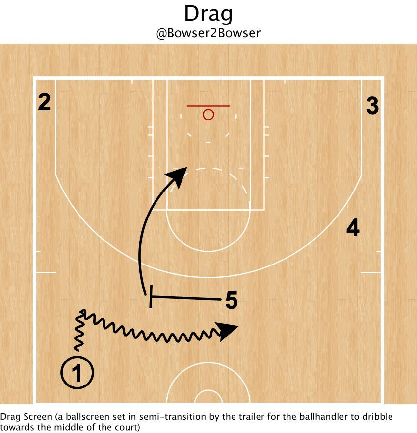
Elevator Screen#
Definition A two-person off-ball screen where a cutter runs between two screeners, who then close together like elevator doors to block the defender's path.
Why It Works
- Creates separation for shooters, forcing defenders to navigate tight spaces.
- Difficult to switch, since defenders can get caught behind the closing screeners.
- Used in late-game and quick-hitter plays for open
- perimeter shots.
How It Works
- A shooter (2) starts near the low block or free-throw line.
- Two screeners (4 and 5) set up near the top of the key with space between them.
- 2 sprints between the screeners, and once he passes, 4 and 5 step together, preventing the defender from following.
- 2 receives a pass for an open shot (often a 3-pointer).
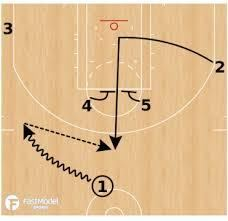
Exit Screen#
Definition A baseline screen that frees a cutter to move to the corner for a shot.
Synonyms Pin- In Screen
Why It Works
- Creates open corner threes, one of the most shots in basketball.
- Helps non-shooting bigs contribute by screening instead of spacing.
- Neutralizes weakside defenders, preventing them from disrupting other actions.
How It Works
- 4 sets a screen near the low block for 2.
- 2 cuts to the corner for a potential open three.
- The screen can also remove a help defender (tagger) from pick-and-roll coverage.
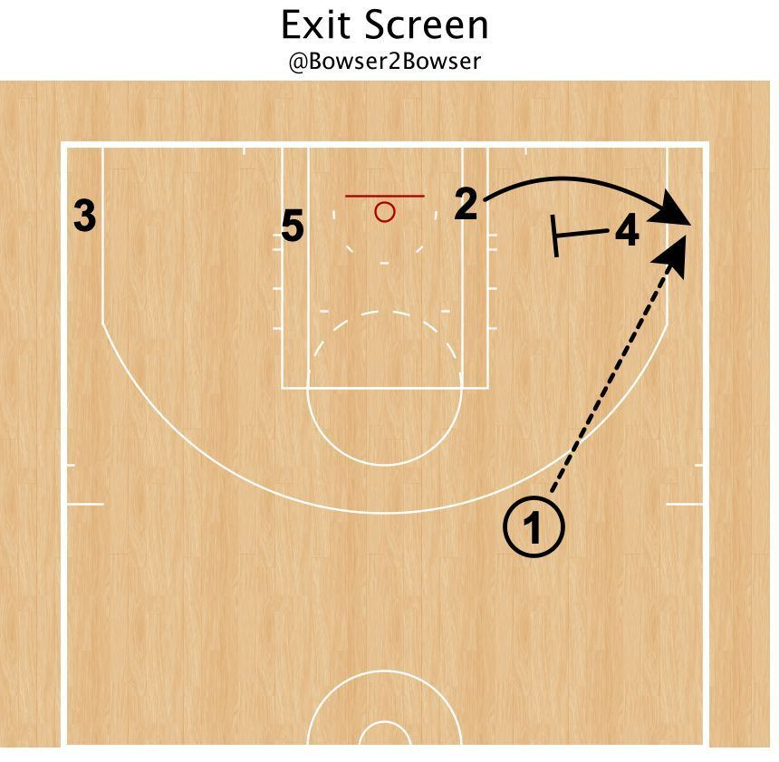
Flare Screen#
Definition An off-ball screen that helps a player move away from the ballhandler along the 3-point line, creating an open perimeter shot.
Why It Works
- Creates open 3-point shots by forcing defenders to navigate screens.
- Counters aggressive on-ball defense, allowing to relocate freely.
- Can be used as a decoy action to open driving lanes or .
- secondary plays
How It Works
- 3 sets flare screen for 2
- 2 goes over top the flare screen towards perimeter
- 1 passes 2 the ball
- All Hammer Screens are Flare Screens, but not all Flare Screens are Hammer Screens
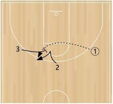
Flat Screen#
Definition A ball screen set with the screener directly toward half-court, allowing the ballhandler to choose either direction to attack.
See Also Butt Screen, Step-Up Screen
Why It Works
- Forces defenders to react late, as the ballhandler has multiple options.
- Great for fast-paced offenses, especially in transition.
- Counters aggressive defenses by making it harder to hedge or trap.
- Allows ballhandlers to dictate the play, depending on defensive positioning.
How It Works
- The screener (5) sets a screen with their back to the basket, facing half-court.
- The ballhandler (1) chooses either direction to attack off the screen.
- The screener can then roll, pop, or slip depending on the defense.
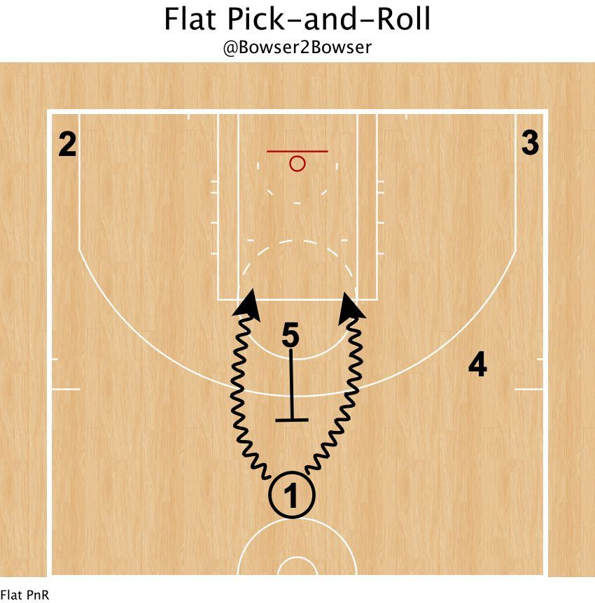
Flex Screen#
Definition A cross screen near the weakside block that allows a player to cut horizontally into the paint for a scoring opportunity.
Why It Works
- Creates easy scoring opportunities by getting players open near the rim.
- Forces defensive switches or miscommunication, leading to mismatches.
- A core element of Flex Offense, allowing constant movement and screening.
How It Works
- 5 dribbles at and passes to 3
- 4 sets the Cross Screen for 1

Ghost Screen#
Definition A fake ball screen where the screener sprints away into space instead of setting the pick. Ghost’s always end around perimeter, where slips are towards the basket
Why It Works
- Forces defensive mistakes—hedging defenders may be left behind.
- Freezes defenders, giving the ballhandler more room.
- Creates open shots or driving lanes by confusing .
- coverage
How It Works
- The screener approaches as if setting a ball screen.
- Instead of screening, they quickly cut away to open space (often to the weakside wing).
- This disrupts the defense’s pick-and-roll coverage, creating an advantage.
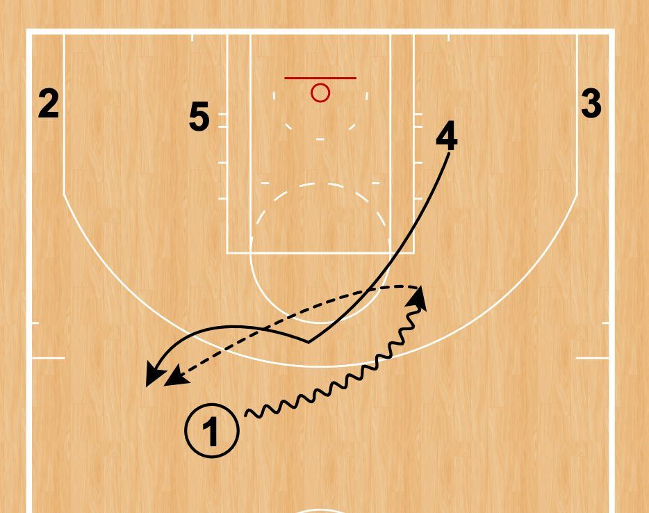
Gortat Screen#
Definition An off-ball screen (often illegal) where the screener seals their own defender to clear a driving for the ballhandler.
Why It Works
- Exploits drop coverage, where x5 is responsible for both the ballhandler and roller.
- Functions like a football block, preventing help defense.
- Forces defenders into tough recovery situations, making it harder to contest at the rim.
- Works best against teams who are switching, screener just screens his defender
How It Works
- 5 sets a ball screen for 1, while the defender (x5) plays drop coverage.
- As 1 snakes back after using the screen, 5 rolls and seals x5 (Gortat Screen).
- This blocks x5 from contesting the drive, creating an open lane for 1.
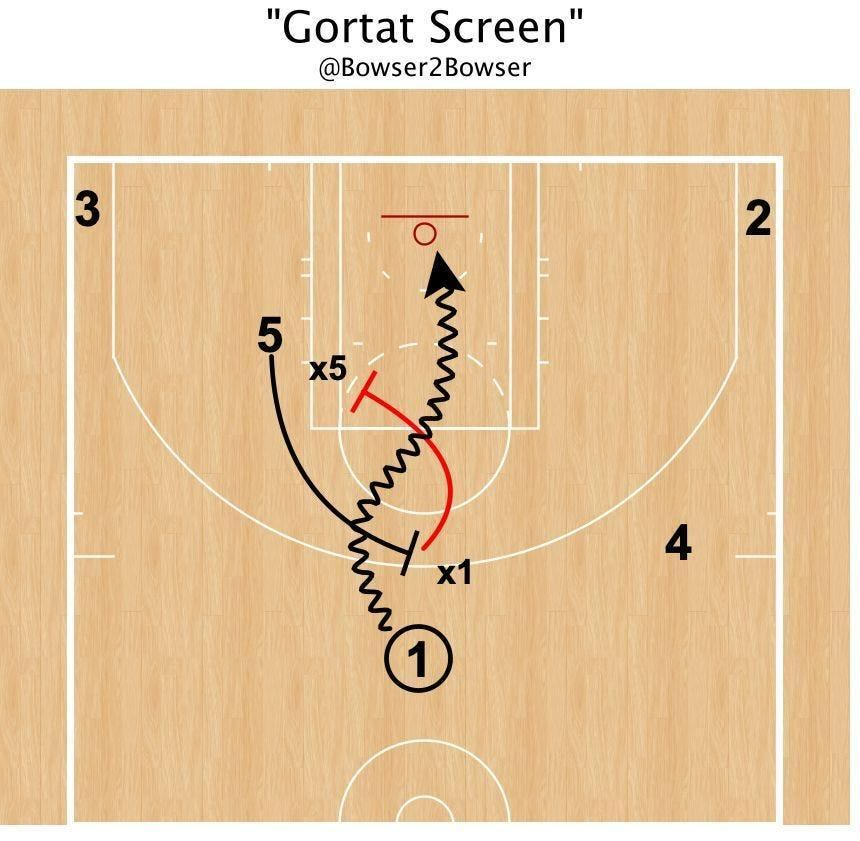
Hammer Screen#
Definition A weakside flare screen that frees a shooter to cut from the wing to the corner while the ballhandler drives baseline.
Why It Works
- Exploits help defense that overcommits to stopping the drive.
- Creates a weakside 2-on-1 situation, forcing a defender to choose.
- Effective even when defenses recognize it, as seen in the NBA.
- Made famous by San Antonio Spurs, now widely used across the league
How It Works
- Play starts with Pistol – 2 sets backscreen for 1 and receives flare from 5
- 3 sets a Hammer Screen
- The ballhandler kicks out to the shooter for an open three.
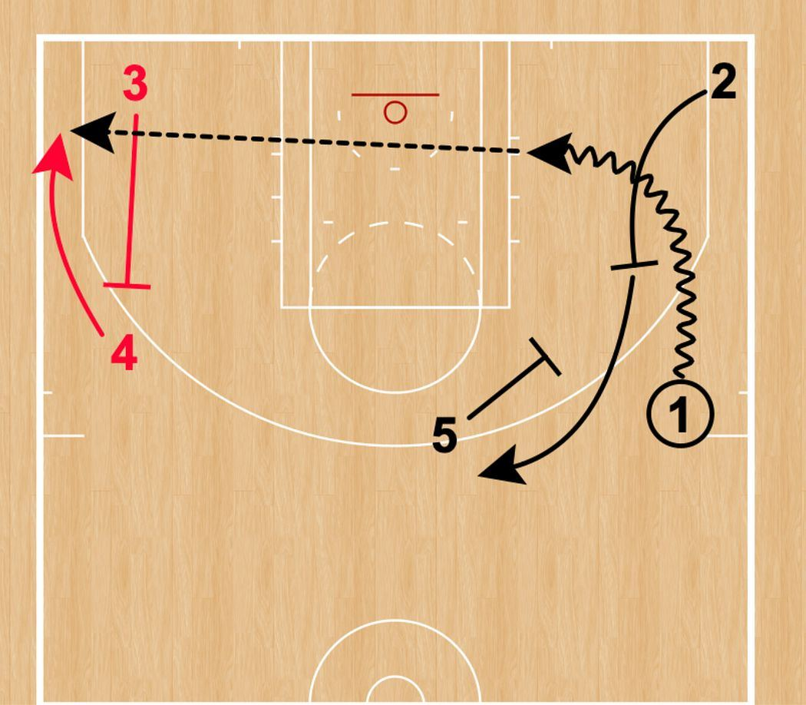
Inverted Ball Screen#
Definition A pick-and-roll where a guard or wing sets the screen for a big, rather than the traditional big setting the screen for a guard.
Why It Works
- Creates mismatches, as a slower big may be guarded by a smaller defender after the switch.
- Forces defensive confusion, since teams are less accustomed to switching on guard-set screens.
- Opens up creative playmaking, especially for skilled bigs who can handle and pass.
- Puts the defense in rotation, making it easier to generate high-quality shots.
How It Works
- A guard or wing (1) sets a ball screen for a big (5), instead of the other way around.
- The big (5) becomes the ballhandler, attacking off the screen.
- The guard (1) can roll, pop, or slip based on the defense's reaction.
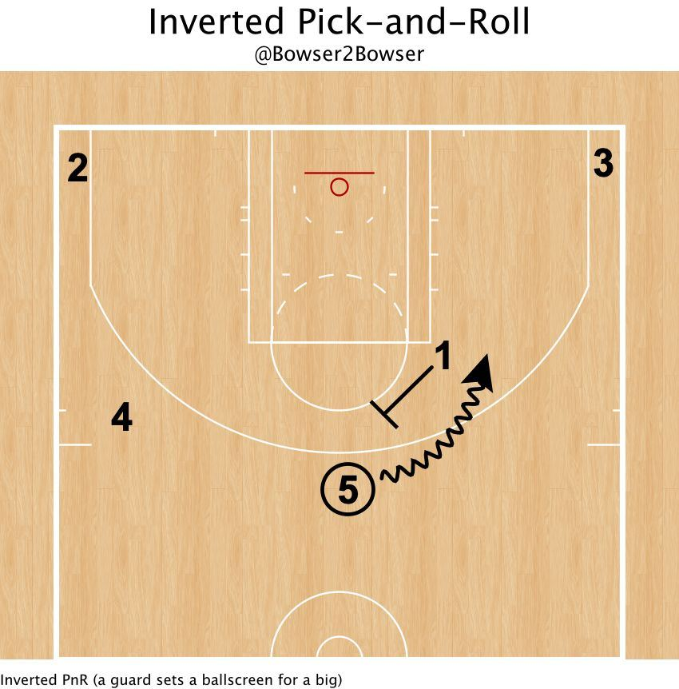
Ram Screen#
Definition An off-ball screen that flows into a ball screen, making it harder for the defense to react.
Why It Works
- Disrupts defensive coverage, forcing a late reaction to the ball screen.
- Can neutralize “ice” or “show” defenses by delaying the screener’s defender.
- Creates better pick-and-roll opportunities by forcing defenders to navigate multiple actions.
How It Works
- A player (2) sets a down screen for the ballscreener (5).
- 5 then sets a ball screen for the ballhandler (1).
- The defender guarding 5 is recovering from the first screen, making it harder to defend the ball screen.
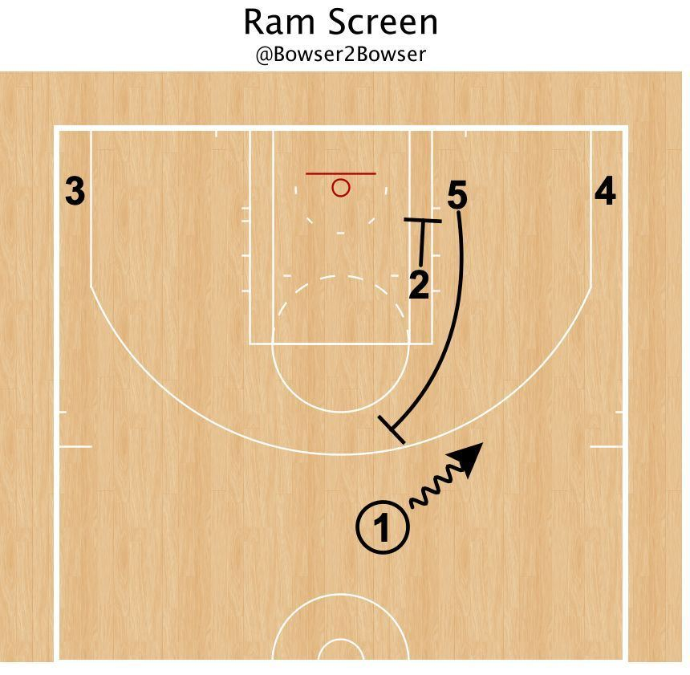
Rip Screen#
Definition A backscreen, typically set by a guard or wing, to free a teammate cutting toward the basket — often used to get a big into deep post position or set up a lob.
Synonyms Backscreen, Back Action, Post Entry Screen.
Why It Works
- Catches defenses off guard by freeing up bigs for deep catches or easy layups.
- Forces the screener's defender to help or switch, often creating mismatches.
- Often combined with actions like Spain PnR or Rip DHO for layered offense.
- Excellent for teams that want to establish early post position or flow into off-ball movement.
How It Works
- A perimeter player (2) sets a Rip Screen for a teammate (4) near the elbow or block.
- Th uses the screen to cut toward the rim, often into a post-up or lob catch.
- The screener may then pop out for a sho or receive a screen themselves in screen-the-screener (StS) action.
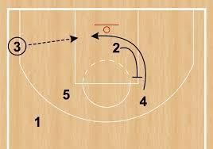
Stagger Screen#
Definition An off-ball action where a cutter runs through two consecutive screens set by teammates, creating separation for a shot or drive.
Why It Works
- Creates open perimeter shots, especially for shooters.
- Forces defenders to navigate multiple screens, leading to miscommunication.
- Used in motion offenses to create constant
- How It movement and scoring opportunities •
Works
- Two screeners (3 and 5) position themselves in a staggered formation along the path of a cutter (2).
- 2 runs off both screens to gain separation from their defender.
- The cutter receives a pass for a shot, drive, or continuation into another action.
- If the defense overcommits, the cutter can fake the route (reject the screen) and cut backdoor.
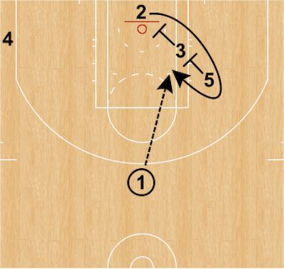
Step Up Screen#
Definition A side pick-and-roll where the screener sets a ball screen parallel to the baseline, allowing the ballhandler to attack downhill toward the sideline.
Synonyms Baseline Ball Screen, Angle PnR.
Why It Works
- Creates space for the ballhandler to attack the rim or pull up.
- Forces defenders to navigate screens differently than traditional middle PnRs.
- Opens up weak-side shooters if help defense collapses.
- Works well in transition or early offense, catching the defense off guard.
How It Works
- The screener (5) positions parallel to the baseline and sets a screen for the ballhandler (1).
- 1 uses the screen to drive toward the baseline, creating separation.
- 5 can either roll to the basket, pop for a shot, slip the screen, or set a veer screen.
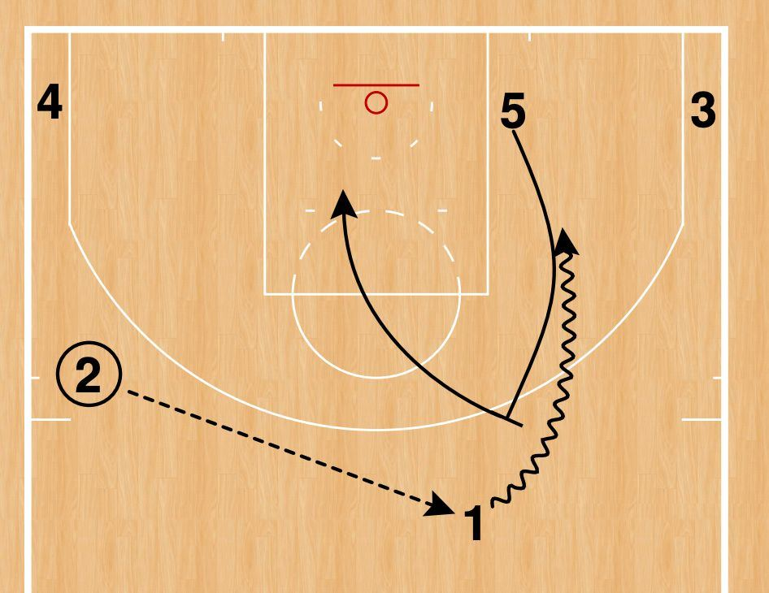
UCLA Screen#
Definition A basket cut where the ballhandler to the wing and then cuts off a high post backscreen toward the rim.
Synonyms High Post Cut, UCLA Screen.
Why It Works
- Creates easy layup opportunities by catching defenders off guard.
- Utilizes post players as screeners, forcing switches or mismatches.
- Flows seamlessly into structured offenses Princeton, Triangle, or Motion.
- Popularized by John Wooden's UCLA teams, making it a staple in modern offenses.
How It Works
- The ballhandler (1) passes to the wing (3) and immediately cuts toward the basket.
- A big (5), positioned at the elbow, sets a backscreen for 1.
- 1 looks for a pass at the rim or clears out if the defense denies the cut.
- If no scoring opportunity arises, the offense can flow into a pick-and-roll, post-up, or weak-side action.
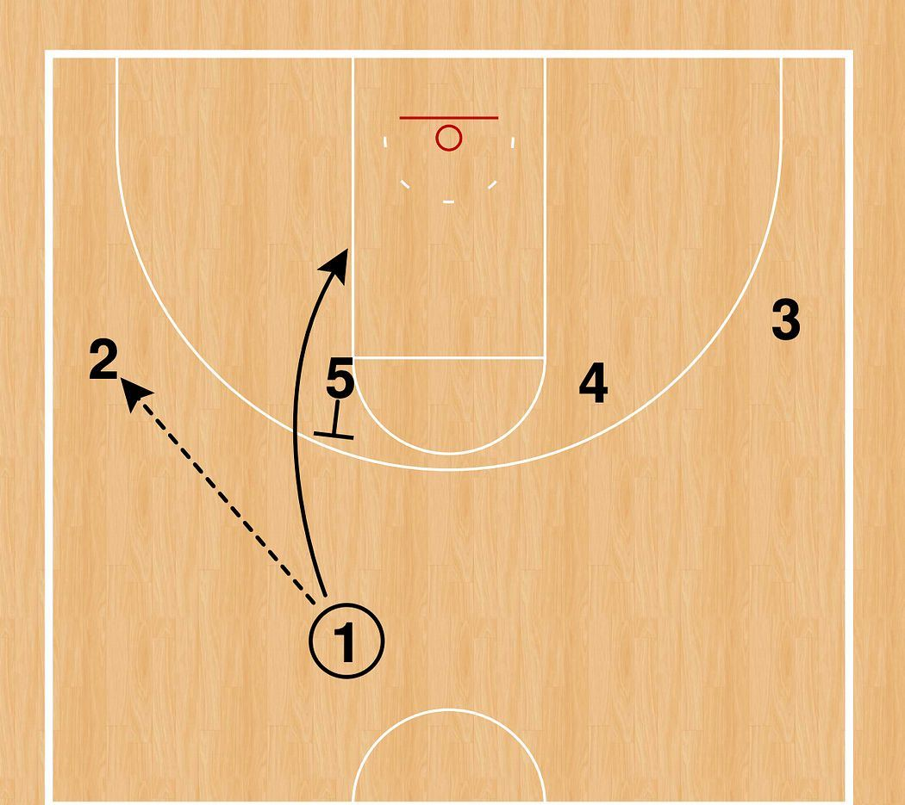
Veer Screen#
Definition A ball screen followed by an off-ball screen, typically a wide pin-down, where the screener screens for a different teammate instead of rolling.
Why It Works
- Exploits defensive tagging, where defender helps on the roll and is late recovering.
- Creates open looks for shooters by forcing defensive miscommunication.
- Counters aggressive pick-and-roll defense, as defenders expect a roll, not a screen.
How It Works
- 5 sets a ball screen for 1.
- Instead of rolling, 5 sets a pin-down screen for 2.
- 2 uses the screen to get open for a shot or drive.
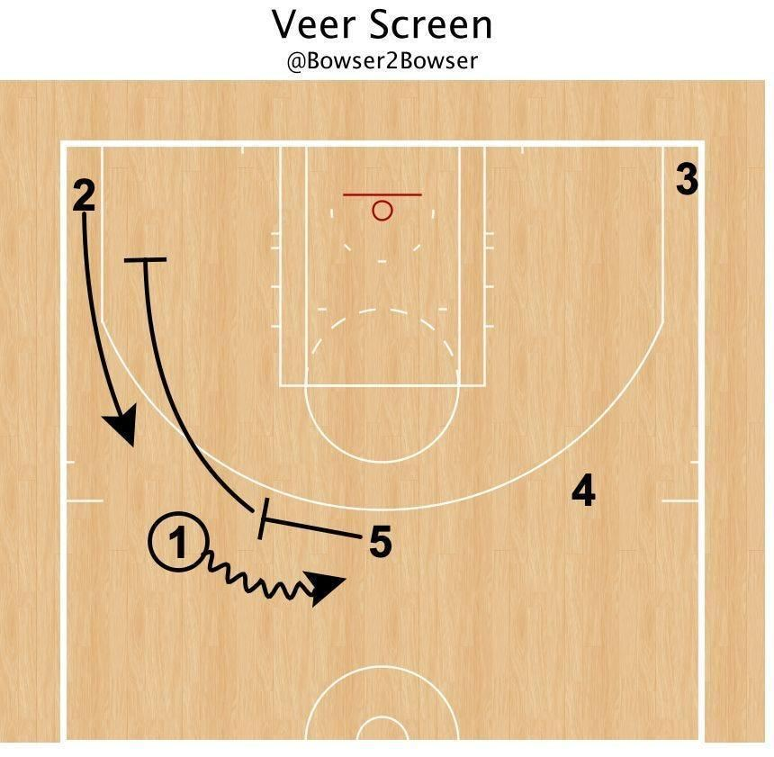
Wedge Screen#
Definition A diagonal backscreen set for a big to help them cut from the perimeter or slot down to the low block, often used to establish deep post position early
Synonyms Diagonal Screen, Angle Screen, Post Entry
- Screen
Why It Works
- Creates early offense post-ups before the defense is set.
- Forces the screener’s defender to help or switch, often creating mismatches.
- Helps the big catch the ball closer to the rim, increasing scoring efficiency.
- Can be layered into Ram PnR, Floppy, or Horns actions.
How It Works
- A guard or wing (2) (usually positioned near the slot or elbow) sets a diagonal screen for the big (5), who starts at the top of the key or slot.
- The big uses the screen to cut down to the low block, typically on the strong side.
- The ball is entered into the post, or the action flows into secondary options like pick-and-roll or split action.
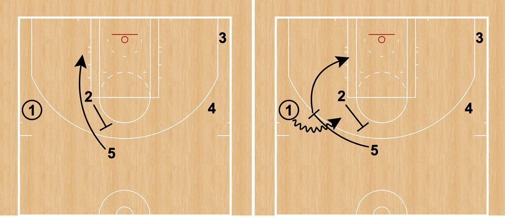
Wide Screen#
Definition A high cross-screen set near the top of the key for a weak-side player to cut toward the ball, often used in 5-Out or 4-Out offenses.
Synonyms Away Screen, Single Away.
Why It Works
- Creates open perimeter looks by using off-ball movement.
- Forces defenders to chase through screens, leading to breakdowns.
- Flows naturally into other offensive actions, like pick-and-rolls or DHOs.
- Maximizes spacing, making it ideal for motion offenses .
- and modern 5-Out sets
How It Works
- A perimeter player (2) on the weak side receives a cross-screen from a teammate (4) near the top of the key.
- 2 cuts toward the ball, either to the wing or to receive a handoff.
Depending on the defense, the action can lead into
- A catch-and-shoot opportunity.
- A dribble handoff (DHO) to attack the lane.
- A ball reversal to shift the defense.
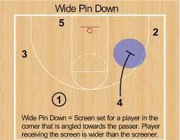
Zipper Screen#
Definition A down screen that helps a player move from the low block to the perimeter, often initiating offensive sets.
Why It Works
- Creates separation for the ballhandler, making it harder for defenders to deny the pass.
- Initiates half-court offense smoothly, often leading into pick-and-roll or Horns sets.
- Can free up a shooter or playmaker, depending on how the defense reacts.
How It Works
- 5 sets a down screen near the free-throw line or low block.
- 2 cuts up the lane, using the screen to receive the ball near the top of the key.
- The offense flows into a pick-and-roll, handoff, or another action.
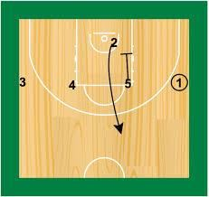
Dribble Hand-Offs
Dribble Hand-Offs#
Dribble Hand Off (DHO)
- The DHO or "dribble hand off" is an offensive movement that involves one player handing or flipping the basketball off to a teammate while dribbling.
- ○ Great way to get the ball to an offensive player who is being overplayed.
- ○ When executing a DHO, there should be limited space between the two players.
- ○ This action of the DHO is often referred to as “Flip” in modern basketball terminology.
- ○ Great action to engage movement within the offense.
When to Use
● Reasons to utilize a DHOs
- ○ 1. Initiate motion - Dribble handoffs can create an advantage that will help generate movement and motion on offense.
- ○ 2. Attack downhill - The player receiving the ball can turn the corner and attack the hoop, which puts a lot of pressure on the help defenders.
- ○ 3. Create mismatches - Just like in a regular PnR, sometimes teams will switch on DHOs which will create a mismatch that smart offensive players can exploit.
- ○ 4. Free a player from a defender - Players who are being denied should get into DHO action to help get the ball in their hands..
Backdoor the DHO#
- When the defense overplays handoff, the receiver can cut pass
- the receiver and attempts to prevent the backdoor towards the basket and receive the
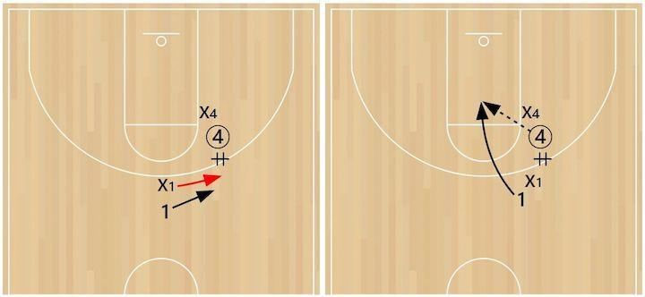
Rescreen after the DHO#
Rescreen after
- As soon as the handoff occurs, the player who passed the ball can set another ball screen so the ball-handler can attack in the opposite direction.
- The re-screen or “Ricky” is a good counter against teams who go under the DHO.
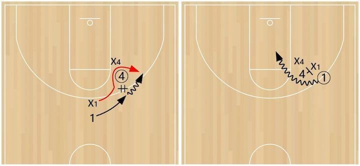
Fake the DHO#
- Instead of handing off the ball, BH will fake the handoff and quickly attack the hoop.
- Sometimes the defense will "cheat" on the play to slow down the receiver, so a fake handoff and quick attack may lead to a wide-open drives or drive and kicks.
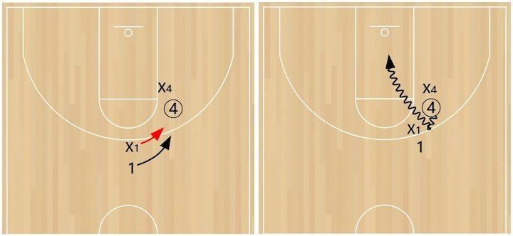
Miami Action#
Definition A dribble handoff (DHO) followed by an immediate ball screen, creating a quick-hitting pick-and-roll opportunity.
See Also Pistol Action, Spain PnR, Chicago Action, Step-Up Screen
Why It Works
- Forces defenders to navigate two quick actions, often leading to defensive breakdowns.
- Creates an immediate scoring opportunity for the ballhandler.
- Flows naturally out of transition or motion offenses, keeping the defense on its heels
How It Works
- A guard or wing (2) receives a dribble handoff (DHO) from a big (5).
- After the handoff, 5 immediately sets a ball screen for 2.
- 2 attacks off the screen, looking to drive, shoot, or pass.
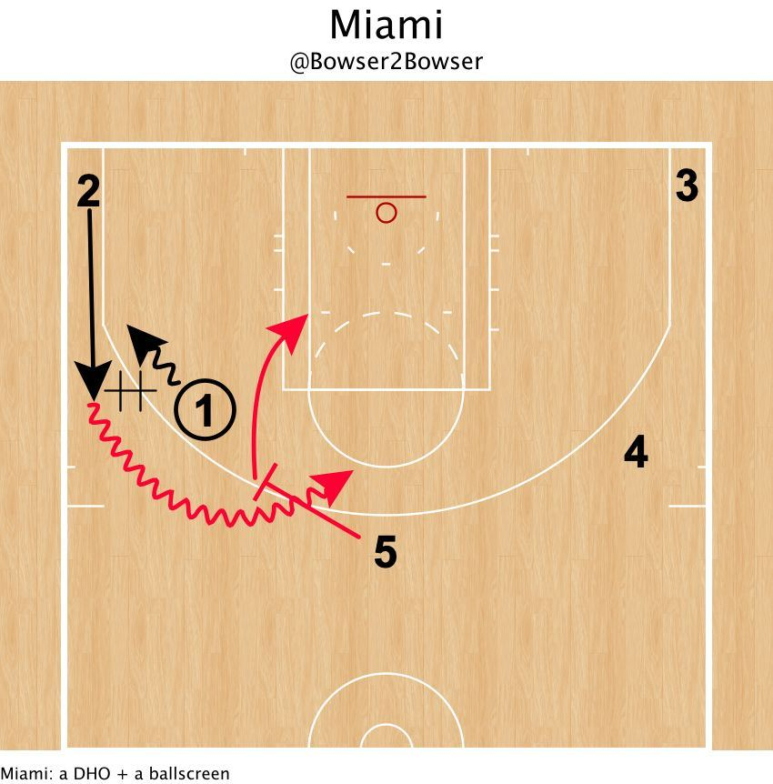
Guarding Dribble Hand-Offs#
Switching DHO
- This is typically the simplest way to guard a dribble hand off.
- The players guarding the passer and the player receiving the ball will switch.
- The tradeoff -- This option will create mismatches
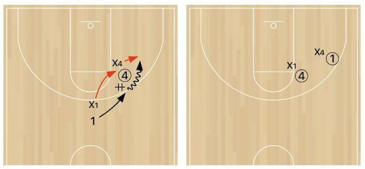
Go Under DHO
- Coach Chang’s recommendation
- x1 goes under 4 through This action is often threat.
- The tradeoff -- The ball he hands off to 1 while x4 gives spaces for x1 to shoot
- used if the receiver isn't considered much of a shooting
- receiver can stop overtop of the hand-off and shoot the
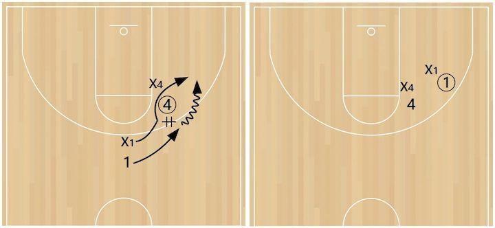
Go Overtop the
- x1 stays attached to 1 and goes over the hand-off from 4
- This action is used if the defense is worried about a player being a good shooter.
- The tradeoff -- The receiver cab have an open lane to the hoop or x1 can get screened off
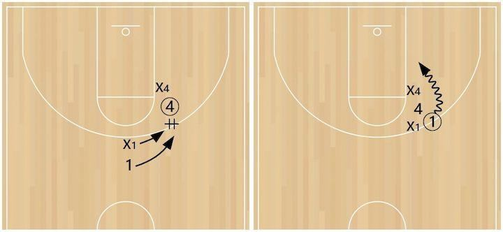
Cuts
45 (9) Cut#
Definition A cut at a 45-degree angle from the wing to the basket.
Synonyms Burn cut.
See Also Step-Up, Euro ball screen, Thru cut, Face cut, Single/Double gap
Why It Works
- It either creates an open scoring opportunity at the rim or clears space on the perimeter.
How It Works
- The wing player (2) cuts diagonally toward the basket.
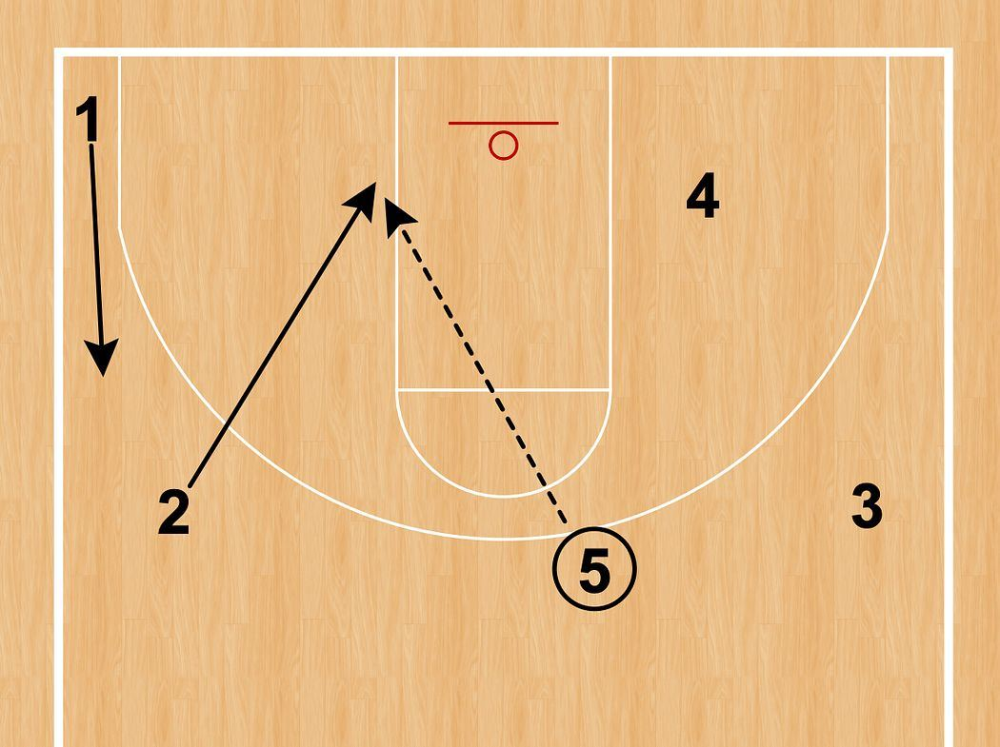
Backdoor Cut#
Definition An off-ball movement where a player fakes toward the ball before cutting behind their defender toward the basket for an open layup or dunk.
Synonyms Baseline Cut, Back Cut, Slip Cut Give and Go.
Why It Works
- Punishes aggressive defenders who overplay passing lanes.
- Creates easy scoring opportunities with quick, decisive cuts.
- Forces defenses to stay disciplined, preventing them from overcommitting.
- Fits seamlessly into motion offenses like Princeton and Triangle, which emphasize constant movement.
- Pairs well with high-IQ passers who can anticipate cuts and deliver accurate passes.
How It Works
- The offensive player (2) starts on the perimeter, being closely guarded.
- They fake toward the ball as if they are going to receive a pass.
- If the defender overplays or denies the pass, 2 quickly changes direction and cuts toward the basket.
- The ballhandler (1) delivers a pass in stride, leading 2 to the rim for a layup or dunk.
- If help defense collapses, 2 can kick out to a weak-side shooter (3) or pass to a cutting teammate (4 or 5).
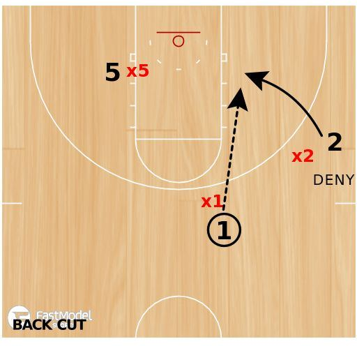
Curl Cut#
Definition An off-ball movement where a player uses a screen to curl toward the basket for a shot or scoring opportunity, executed by shooters or slashers.
Synonyms Tight Cut, Wrap Cut, Pin-Down Curl.
Why It Works
- Creates high-percentage scoring chances for mid-range jumpers or layups.
- Forces defenders to fight through screens, often leading to miscommunication.
- Works best for athletic wings and shooters who excel at moving without the ball.
- Fits into Motion, Flex, and Floppy offenses, keeping defenses in constant motion.
- Pairs well with secondary actions like pick-and-rolls, flare screens, or weak-side exchanges.
How It Works
- A shooter or cutter (2) starts on the wing or corner while a teammate (4) sets a screen near the free-throw line or baseline.
The cutter (2) reads their defender
- If the defender trails too closely, 2 curls tightly around the screen and heads toward the basket.
Iverson Cut#
Definition A horizontal cut across the top of the key, usually off staggered screens from two bigs at the elbows.
See Also Iverson Series, Horns Set, Staggered Screen, Flex Action
Why It Works
- Creates open perimeter shots or driving lanes.
- Forces defensive switches or miscommunication, leading to mismatches.
- Can flow into multiple offensive options, including .
- pick-and-rolls, post-ups, or handoffs
How It Works
- 3 starts near the weak-side wing or corner and Iverson Cuts overtop
- 5 goes opposite direction and replaces 3
- The cutter moves across the court, using screens from 4 and 2.
- Once free, the cutter can receive the pass for a shot, drive, or post-up.
- If the defense overplays, the cutter can reject the screens and cut backdoor.
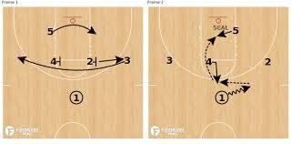
L-Cut#
Definition An off-ball movement where a player starts low (typically near the block), then cuts up the lane in an L-shaped pattern to receive a pass on the perimeter.
Synonyms Perimeter Entry Cut, Shape-Up Cut.
Why It Works
- Creates separation from defenders, making it easier to receive a pass.
- Engages defenders in a misdirection, forcing them to react to movement.
- Works well against ball denial, providing a counter for perimeter entry passes.
- Can trigger secondary actions, such as a pick-and-roll or dribble handoff.
- Fits into structured motion offenses, ensuring proper floor spacing and timing
How It Works
- The offensive player starts near the block or mid-post
- They take a few steps toward the basket to set up their defender.
- They quickly change direction and cut up to the perimeter, forming an L-shape with their movement.
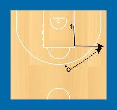
Laker Cut#
Definition A basket cut made by the player who passes the ball into the post, creating movement and additional scoring opportunities.
Synonyms Post Entry Cut, Give-and-Go Cut.
Why It Works
- Keeps the defense engaged, preventing easy
- double-teams in the post.
- Creates layup opportunities if the defender loses
- track of the cutter. •
- Fits naturally into post-centric offenses
It Works
- A perimeter player (1) passes the ball into the post (5).
- 1 immediately cuts toward the basket, looking for a return pass.
Depending on the defense, the cutter can
- Finish at the rim if open.
- Clear out to the weak side to open space for the post.
- Set a screen or flow into secondary actions (e.g., split cut, weak-side pin-down).
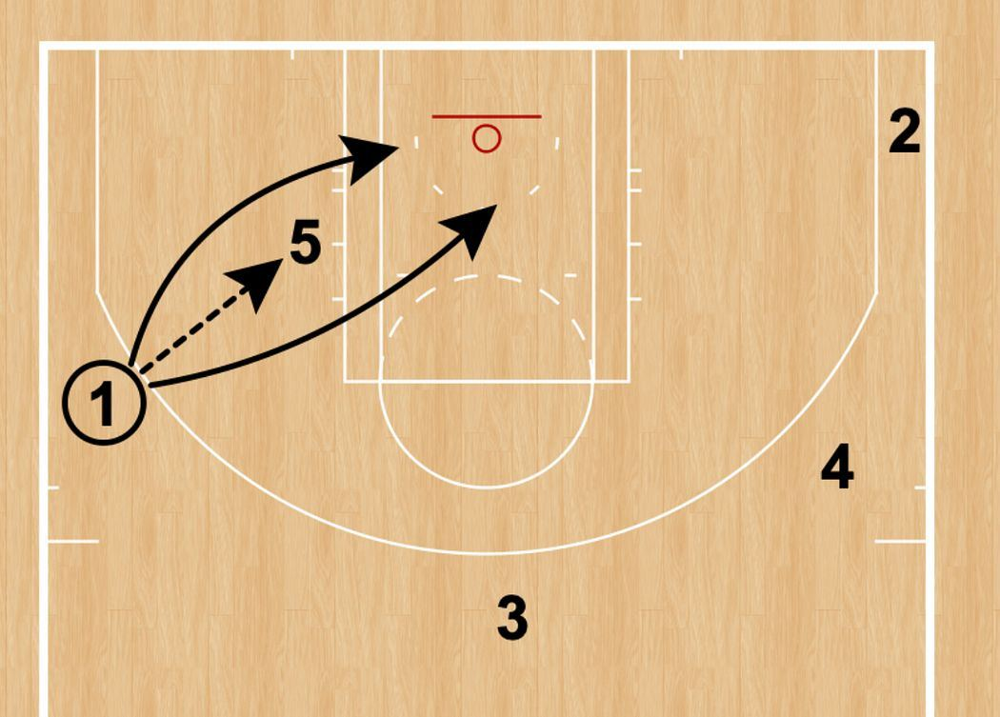
Shallow Cut#
Definition A guard-to-guard exchange where the ballhandler dribbles toward a teammate on the perimeter, prompting them to cut across the top of the key and relocate to the opposite side.
- How It Synonyms: Guard Exchange, Perimeter Cut, Shallow
- Replace.
Why It Works
- Maintains floor balance by repositioning perimeter players.
- Creates space for driving lanes by clearing a defender from the strong side.
- Disrupts defensive matchups, forcing defenders to track moving players.
- Flows naturally into secondary actions, keeping the offense fluid.
- Useful in motion offenses, helping to initiate half-court sets.
Works
- The ballhandler (1) dribbles toward a perimeter teammate (2) at the wing or slot.
- Instead of setting a screen or receiving a handoff, 2 shallow cuts across the top of the key to the opposite side.
- The ballhandler (1) may then pass to the next available option or use the space created to drive or set up another action.
The cut can flow into secondary actions, such as
- A dribble handoff (DHO) after the shallow cut.
- A pick-and-roll with the trailing big (5).
- A flare screen for the cutter (2) to receive an open shot.
- A continuity motion into another shallow cut on the weak side.
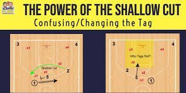

Shuffle Cut#
Definition A wing-to-post cut off a backscreen, designed to create a scoring opportunity near the basket.
Synonyms Slice Cut
Why It Works
- Creates deep post position for easy scoring chances.
- Forces defenders to navigate screens, leading to miscommunication.
- Used in continuity offenses (e.g., Princeton, Flex) to keep the ball moving.
- Works well against overaggressive perimeter defenses, as the cut punishes overplays
How It Works
- 5 sets a backscreen at the elbow or high post.
- 1 cuts hard across the lane toward the basket, using the screen.
- 1 receives a pass for a layup or post-up opportunity.
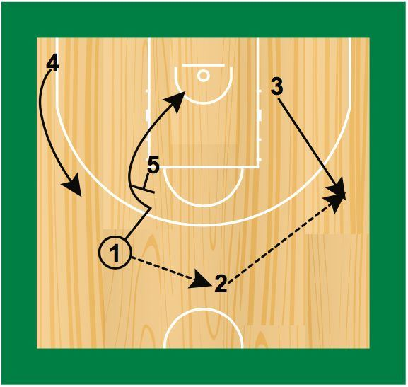
UCLA Cut#
Definition A basket cut where the ballhandler to the wing and then cuts off a high post backscreen toward the rim.
Synonyms Finger Cut, UCLA Screen
Why It Works
- Creates easy layup opportunities by catching defenders off guard.
- Utilizes post players as screeners, forcing switches or mismatches.
- Flows seamlessly into structured offenses Princeton, Triangle, or Motion.
- Popularized by John Wooden's UCLA teams, making it a staple in modern offenses.
How It Works
- The ballhandler (1) passes to the wing (3) and immediately cuts toward the basket.
- A big (5), positioned at the elbow, sets a backscreen for 1.
- 1 looks for a pass at the rim or clears out if the defense denies the cut.
- If no scoring opportunity arises, the offense can flow into a pick-and-roll, post-up, or weak-side action.

V-Cut#
Definition A cut where an offensive player fakes one direction before quickly cutting the opposite way in a “V” shape to create separation from their defender and receive a pass.
Synonyms Change of Direction Cut, Perimeter Separation Cut.
Why It Works
- Creates separation from defenders by using a quick change of direction.
- Counters ball denial defenses, making it easier to get open for a pass.
- Works well in structured offenses, such as Princeton Motion, ensuring fluid ball movement.
- Can trigger secondary actions, like a pick-and-roll or dribble handoff.
- Simple yet highly effective for all levels of basketball.
How It Works
- The offensive player (4) starts on the perimeter, usually near the wing or slot.
- They fake a move toward the basket or baseline, engaging their defender.
- As the defender reacts, the offensive player quickly changes direction and cuts back toward the or perimeter, forming a “V” pattern.
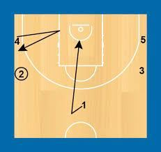
Zipper Cut#
Definition A cut up the lane line that helps a player move from the low block to the perimeter, often initiating offensive sets.
Why It Works
- Creates separation for the ballhandler, making it harder for defenders to deny the pass.
- Initiates half-court offense smoothly, often leading into pick-and-roll or Horns sets.
- Can free up a shooter or playmaker, depending on how the defense reacts.
How It Works
- 5 sets a down screen near the free-throw line or low block.
- 2 Zipper Cuts up the lane, using the screen to receive the ball near the top of the key.
- The offense flows into a pick-and-roll, handoff, or another action.

Offenses
Euro Ball Screen Offense#
Key Concepts
- Empty-Side Pick-and-Roll: Clears the corner on the ball side to eliminate help defenders and open up the roller or driver.
- Continuity Flow: After the first pick-and-roll, the ball is reversed quickly into another — there’s always a next action.
- Floor Spacing: Big emphasis on perimeter alignment to open driving lanes and force closeouts.
- Non-Stop Movement: Wings lift, flare, exit, and cut while the ball moves side-to-side — defenses are never set.
- Read-and-React Structure: Players are trained to read the defense’s rotation and make live decisions, not just follow plays.
Euro Ball
- Empty Corner Ball Screen
- The offense clears the strong side corner, isolating the handler and screener.
- The ballhandler attacks downhill with no help defender to tag the roll.
- If stopped, it flows seamlessly into the next ball reversal.
- Goal: Create a 2-man game with maximum space and zero weak-side help
- Ball Reversal into Re-Screen or Exit Action
- If the initial PnR doesn’t yield a good look, the ball is quickly reversed across the top.
- The player who passed can exit through the baseline or cut weak side.
- The next wing initiates another PnR with the 5, keeping the cycle alive.
- Goal: Force constant defensive shifts until breakdown occurs
- Backside Shooting & Cutting
- The weak side is always active: players exchange, flare, or screen away to distract defenders.
- If a mismatch or help situation occurs, the weak side becomes the target.
- Goal: Keep help defense engaged while the strong side attacks.
Euro Ball
How It Works
- 3 receives ball screen from 4 who rolls
- 5 lifts to pull help or to be next option
- 3 passes to 5
How It Works
- 2 receives ball screen from 5 who rolls
- 4 lifts to pull help or to be next option
- 2 passes to 4
How It Works
- On 5’s catch, 1 “45” cuts to basket
- 5 looks at 1 and then dribbles at 2
- 5 passes to 2 and sets ball screen
How It Works
- On 4’s catch, 3 “45 cuts” to basket
- 4 looks at 3 and then dribbles at 1
- 4 passes to 1 and sets ball screen
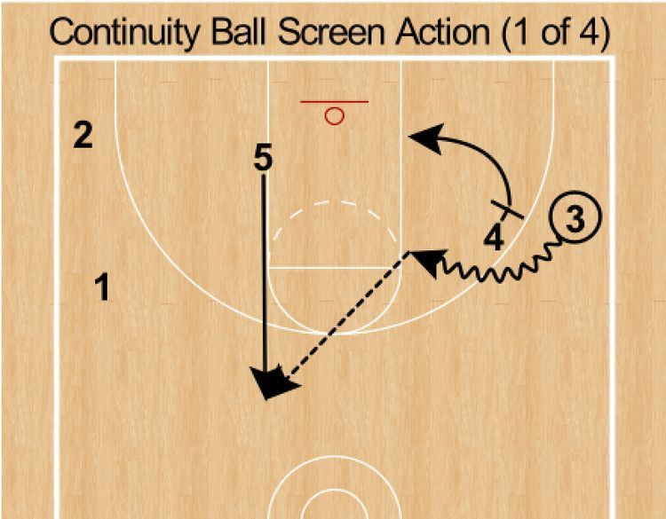
Euro Ball
- Versus Switching Defenses
- Use slip screens before the switch can be executed.
- Invert the PnR — have a guard set the screen for a big to attack mismatches.
- Use short rolls to force rotations, then play out of 4-on-3.
- Versus ICE or Drop Coverage
- Guards use snakes, pull-ups, or floaters.
- Stretch bigs pop to space — especially effective against drop defenders who stay in the paint.
- Versus Aggressive Traps or Blitzes
- The ballhandler makes a quick pass out, triggering a short roll or swing to the opposite side.
- The big must be able to pass out of the trap — smart decision-makers are key.
Strengths Weaknesses
- Constant Action keeps defenses rotating and fatigued.
- Maximizes Spacing for PnR with empty corners.
- Adaptable to Personnel — doesn’t require superstars to run effectively.
- Difficult to Scout — decision-based, not pattern-based.
- Flows into other offenses easily (e.g., Spain PnR, DHO series).
- For Teams Without Elite Scorers
- Against Drop Coverage
- For Developmental Teams
- For Skilled Bigs & Smart Guards
- To Build Identity Around Team Play
- Requires high basketball IQ and timing.
- Less effective without a skilled ballhandler.
- Can struggle against switching defenses if mismatches aren't exploited.
- Late-clock scoring can be tough if continuity doesn’t break the defense.
- Switching Defenses
- Aggressive On-Ball Pressure
- Pre-Rotations & Help Schemes
- Lack of Decision-Making Personnel
- Limited Weak-Side Shooting
Final Thoughts
- The Euro Continuity Offense is one of the most adaptable, intelligent, and modern systems you can run. It’s perfect for teams that value:
- Spacing & Decision-Making
- Non-Stop Offensive Flow
- Pick-and-Roll Variety
- Development of Basketball IQ
- It does not require elite athleticism, just discipline, spacing, and smart reads. For teams looking to install a modern identity built on team play and continuity — this is an ideal offensive backbone.
- Continuity Offense
Flex Offense#
Key Concepts
Definition A continuity offense that relies on constant screening, cutting, and ball movement, primarily using flex screens and down screens to generate open looks.
Synonyms Motion Flex, Continuity Flex.
See Also Flex Screen, Cross Screen, Screen-the-Screener (StS), Down Screen
How It Works
- A player (2) cuts off a flex screen near the low block for a scoring opportunity.
- The screener (3) then receives a down screen from a teammate (5) to get open for a shot.
- This sequence repeats on the opposite side, creating constant movement and screening action.
Why It Works
- Forces defensive communication and switching, creating mismatches.
- Provides balanced floor spacing and equal scoring opportunities for all players.
- Can be run against any defense, making it a reliable, structured offense.
- Used at all levels of basketball, especially in high school and college programs.
Key Concepts
- Constant Screening & Cutting: The offense thrives on flex screens, down screens, and ball reversals to free players for open shots.
- Continuity Flow: If the initial action doesn’t work, the same pattern repeats on the opposite side, forcing the defense to stay engaged.
- Balanced Scoring: Every position gets involved in scoring, not just guards or bigs.
- Floor Spacing: Proper spacing ensures driving lanes and passing angles remain open.
- Player Development: Great for teaching young players fundamentals of movement, screening, and reading the defense.
Counters
- How to Beat Pressure Defense
- Use backdoor cuts when defenders deny passing lanes.
- Utilize dribble handoffs to keep ball movement fluid.
- Reverse the ball quickly to shift the defense and create openings.
- How to Beat a Switch Defense
- Slip screens instead of setting full screens.
- Attack mismatches if a guard gets switched onto a big.
- Use ghost screens to confuse defenders.
- How to Beat a Zone Defense
- Flash cutters to the high post to break down the zone.
- Screen the zone defenders to free shooters.
- Use quick ball movement and skip passes to shift the defense.
Strengths Weaknesses
- Great for teams without elite athletes – relies on team play over individual skill.
- Continuity ensures constant movement, preventing stagnant possessions.
- Difficult to scout & defend – defenders must fight through multiple screens.
- Teaches spacing, cutting, and screening fundamentals.
- Equal scoring opportunities for all players.
- Can be adapted for modern offenses – NBA teams use Flex-based actions.
- Effective for player development – great for teaching off-ball movement.
- Works at all levels – widely used in high school, college, and international play.
- Requires discipline and patience – players must be willing to move without the ball.
- Needs players who can pass and screen effectively.
- Less effective against switch-heavy defenses.
- Relies on outside shooting – if no shooters are available, spacing becomes difficult.
- Physical defenses can disrupt cuts and screens.
- Teams that communicate well on defense can counter the continuity flow.
- If the team lacks IQ or discipline, the offense can stagnate.
Final Thoughts
The Flex Offense is ideal for teams that emphasize
- Team basketball over isolation play.
- Movement-based offense with multiple scoring options.
- Disciplined execution and high-IQ decision-making.
- Balanced scoring without relying on one star player.
- Examples

Key Concepts
- Coach Chang’s recommendation
- High-Post Playmaking: The offense often runs through the big men (4 & 5) at the elbows, allowing for pick-and-rolls, handoffs, or high-low passing.
- Multiple Actions: Horns sets can seamlessly transition into pick-and-roll, dribble handoffs (DHOs), post-ups, or flare screens.
- Floor Balance & Spacing: The offense maintains a strong-side and weak-side balance, preventing easy defensive help.
- Mismatches & Counters: Horns allows teams to create mismatches through switches, post-ups, and pick-and-pop actions.
- Continuity Flow: If the initial action is denied, the offense naturally flows into secondary options without resetting. Also able to run play to opposite side as Horns is a Symmetrical Offense
Horns Offense#
Core Actions
- Horns Pick-and-Roll (Standard Action)
- The point guard (1) uses a screen from a big (4 or 5) at the elbow.
- The screener rolls to the basket, while the other big spaces or pops for a shot.
- If the defense collapses, 1 can pass to the weak-side shooter (3) for an open three.
- Goal: Force defenders into tough decisions by utilizing pick-and-roll reads.
- Horns DHO
- The point guard (1) passes to a big (5) at the elbow, then immediately follows for a handoff.
This can lead to
- A driving lane for the guard.
- A pick-and-roll with 5 rolling to the rim.
- A kick-out pass to a weak-side shooter if help defense collapses.
- Goal: Create momentum and separation for the ballhandler.
Core Actions
- Horns Flare Screen (Off-Ball Action)
- Instead of a pick-and-roll, the big (5) sets a flare screen for a shooter (2) to relocate to the wing for a three.
- The other big (4) may simultaneously set a down screen for another shooter (3).
- Goal: Free up shooters and force defenders to chase through screens.
- Horns High-Low Entry (Post Play Option)
- The point guard (1) passes to a big (5) at the elbow.
- The other big (4) seals their defender inside for a lob or easy post-up.
- If the defense collapses, 5 can pass out to the perimeter for a shot.
- Goal: Utilize size advantages and force defensive help inside.
- Horns Iso & Mismatch Hunting
- The ballhandler uses a screen, forcing a switch with a slower defender.
- 1 attacks the mismatch with a drive or mid-range shot.
- Meanwhile, the big seals the smaller defender in the post for a lob.
- Goal: Take advantage of defensive switches and mismatches.
Counters
- How to Beat Ice (Sideline Trap) Coverage
- If the defense forces the ballhandler toward the sideline (Ice Coverage), the offense counters with:
- Rejecting the screen and attacking baseline.
- Rescreening (Flip the Pick) to change the angle.
- Passing to the high post (5) to initiate a DHO or reversal.
- How to Beat a Switch Defense
- Attack the mismatch (guard vs. big) by driving or shooting over the slower defender.
- Post up the big vs. a smaller guard after the switch.
- Slip screens to beat defenders anticipating a switch.
- How to Beat a Zone Defense
- Flash a big to the high post to initiate the offense.
- Screen the zone defenders to create space for shooters.
- Utilize quick ball reversals & skip passes to shift the defense.
Strengths Weaknesses
- Creates spacing and mismatches through screen actions.
- Versatile—can flow into pick-and-roll, handoffs, or post-ups.
- Prepares teams for multiple defensive coverages.
- Forces defensive communication and rotations.
- Allows multiple playmakers to be involved decision-making.
- Can be adapted for modern offenses—works with NBA-style motion offense.
- Perfect for teams with skilled bigs who can pass and shoot.
- Works against aggressive defensive pressure by maintaining spacing.
- Requires skilled big men—if your bigs can’t pass or shoot, it limits options.
- Less effective if the team lacks shooters—spacing becomes harder.
- Can be predictable if defenses are disciplined and switch effectively.
- in
- Defenses that switch aggressively can neutralize screening actions.
- Physical defenders can bump cutters and disrupt timing.
- If a team lacks a true playmaker,
- Horns may struggle in late-shot clock situations.
Final Thoughts
The Horns Offense is ideal for teams that emphasize
- Versatility—works for both inside and outside scoring threats.
- Spacing and quick decision-making.
- Creating mismatches through screens and switches.
- Maximizing skilled big men in the offense.
- It is one of the most flexible offensive systems, allowing teams to flow into multiple scoring options without stopping ball movement.
- Perfect for teams that want a structured offense with built-in flexibility, strong spacing, and multiple ways to attack!
- Coach Chang’s recommendation
Definition A fast-paced 5-out offense designed to create quick, high-percentage shots early in the shot clock through pace and spacing.
Synonyms Hurry-Up Offense, 21 Series.
- Origin: Widely used in college and professional basketball, especially in the NBA, as a go-to transition offense.
How It Works
- The BH advances quickly, initiating handoffs, screens, or pick-and-rolls.
- Players maintain optimal spacing to create driving lanes and open shots.
Flows into multiple actions, including
- Chase Action – A pass into a dribble handoff (DHO).
- Keep Action – The passer keeps the ball instead of handing it off.
- Dribble Action – A ballhandler-driven attack without an initial pass.
- Down Action – A pin-down screen to free a shooter.
Why It Works
- Creates quick scoring opportunities, ideal for late-game situations.
- Forces defenses to react immediately, leading to mismatches.
- Keeps the offense unpredictable with multiple options.
Pistol Offense#
Key Concepts
- Early Offense: Initiated before the defense is set, often in transition or secondary break.
- Strong-Side Triangle: Ballhandler on the wing, corner shooter, and big trailing from the top.
- DHO into Ball Screen: The ballhandler passes to the corner and follows for a handoff, then flows directly into a pick-and-roll.
- Read-Based Options: Guards read the defense and decide whether to keep, pass, or use the screen.
- 5-Out Spacing: Keeps the lane open for drives, rolls, and cuts.
Core Actions
- Chase Action (DHO + PnR)
- 1 passes to 2 (in corner) and follows for a DHO.
- 2 hands back to 1, who turns the corner aggressively.
- 5 sets a ball screen immediately after the DHO.
- 1 attacks downhill, 5 rolls, and shooters space the floor.
- Goal: Immediate downhill drive + quick decision-making.
- Keep Action
- Same setup as Chase, but 2 fakes the handoff and keeps the ball.
- As 1 clears out, 5 flows into a ball screen for 2.
- 1 "shakes" or lifts to the wing for kick-outs.
- Goal: Punish defenders who cheat the DHO or overplay.
Core Actions
- Dribble Action
- 1 dribbles directly at 2, who sets a step-up screen for 1 to attack baseline.
- 5 begins to shift over for secondary screening.
- After the initial action, 5 may set a flare screen for 2, then flow into another PnR.
- Goal: Initiate offense without passing; creates a dynamic two-man game.
- Down Action (Pin-Down + PnR)
- 2 starts low and receives a pin-down from 5 to get open on the wing.
- 1 hits 2, and 5 immediately sets a ball screen for 2.
- Flows into standard pick-and-roll or re-screen.
- Goal: Get a shooter or secondary ballhandler into a PnR.
Counters
Pistol actions are easily adjustable based on how the defense reacts
- Vs. Switches: Use slips, ghost screens, or quick re-screens to exploit mismatches.
- Vs. Aggressive ICE or Traps: Use short rolls with 5 to beat double-teams.
- Vs. Overplays on DHO: Trigger Keep action or backdoor cuts.
Strengths Weaknesses
- Quick-hitting offense that works early in the clock
- Works well with any personnel — elite guards or role players
- Natural flow into PnR and secondary
- Space-friendly with strong-side triangle principles
- Easily layered with other actions (Spain, Floppy, Horns)
- Difficult to scout due to simplicity and variations
- In Transition or After Made Baskets
- For Teams with Guard Playmakers
- To Flow into Other Actions
- Against Drop or ICE PnR Coverages
- For Youth & Developmental Programs
- Relies heavily on timing and execution
- Can become predictable if run without variation
- May struggle against switch-heavy defenses without mismatch counters
- Not ideal for slow-paced, methodical teams
- Limited post-up opportunities unless added as secondary action
- Switch-Everything Defenses
- Aggressive Hedging or Traps
- Pre-Rotating Help Defenders
- Overreliance on One-Side
Final Thoughts
- The Pistol Offense is one of the most versatile, efficient, and modern offensive frameworks in basketball. It combines simplicity and flow with the ability to create immediate scoring chances. Ideal for:
- Teams that want to attack early in the clock
- Programs developing PnR and DHO decision-making
- Coaches who want a seamless transition into halfcourt sets
- Rosters with skilled guards and screen-setting bigs
- Fast, smart, and adaptable — Pistol is a must-have in any coach’s offensive playbook.
Definition A DHO sequence where the point guard (1) passes to the strong-side corner player (2), then
- immediately follows the pass to receive a handoff and attack downhill.
Why It Works
- Provides momentum for the ballhandler, making it easier to get downhill.
- Forces defenders to navigate multiple actions, creating breakdowns.
- Naturally flows into pick-and-roll or secondary options if the drive isn’t open.
- The strong-side corner player (2) moves up to the wing (FT line extended) to receive a pass from the point guard (1).
- The point guard (1) then chases the pass and takes a handoff from 2.
- As 1 comes off the DHO, their primary option is to turn the corner and attack the rim.
- Meanwhile, the trailing big (5) moves toward the strong side, ready to set a screen or be a scoring option.

Definition A DHO fake where the strong-side wing (2) keeps the ball instead of handing it off to the point guard (1), then attacks off the dribble.
Synonyms Shake Action.
Why It Works
- Fakes out defenders expecting a DHO, creating • driving lanes.
- Naturally flows into a ball screen action for easy
- decision-making.
- Occupies weak-side defenders, making help defense harder.
- The strong-side corner player (2) moves up to the wing (FT line extended) to receive a pass from the point guard (1).
- The point guard (1) follows the pass to take a handoff, but 2 keeps the ball instead.
- 2’s first option is to turn the corner and attack the rim.
- If 2 can’t drive immediately, the trailing big (5) sets a ball screen for
- 2 to create a scoring opportunity.
- 1 “shakes” or lifts from the strong-side corner as a kick-out option.
Weak-side players (3 & 4) can
- Set pin-downs or flare screens to free a shooter.
- Exchange spots to shift defenders.
- Maintain spacing for catch-and-shoot opportunities.

Definition A step-up ball screen where the strong-side corner player (2) sets a screen for the •
- point guard (1) to drive baseline instead of receiving a pass.
Synonyms Step-Up Action,
Why It Works
- Provides an early scoring chance with a baseline drive.
- Keeps defenders occupied with multiple screening actions.
- Allows fluid ball movement into additional offensive options.
- The strong-side corner player (2) moves up to the wing but instead of catching a pass, he sets a step-up screen (screen facing the opposite baseline) for 1.
- The point guard (1) uses the screen to attack downhill toward the baseline.
- The trailing big (5) moves to the strong side as a potential screener or roller.
Counters & Progressions
- If 1 can’t attack off the screen, 5 sets a flare screen for 2 to get an open shot.
- If 2 isn’t open, 5 then sets a wing ball screen for 1 to drive middle.
- If 1 can’t score or pass to 5 rolling, he can reverse the ball to 2 at the top of the key.
- This pass triggers a weak-side pin down, where 4 screens for 3 to create another scoring option.
Definition A DHO fake where the strong-side • wing (2) keeps the ball instead of handing it off to the point guard (1), then attacks off the dribble.
Synonyms Shake Action.
Why It Works
- Fakes out defenders expecting a DHO, creating driving lanes.
- Naturally flows into a ball screen action for easy decision-making.
- Occupies weak-side defenders, making help defense harder.
- The strong-side corner player (2) moves up to the wing (FT line extended) to receive a pass from the point guard (1).
- The point guard (1) follows the pass to take a handoff, but 2 keeps the ball instead.
- 2’s first option is to turn the corner and attack the rim.
- If 2 can’t drive immediately, the trailing big (5) sets a ball screen for
- 2 to create a scoring opportunity.
- 1 “shakes” or lifts from the strong-side corner as a kick-out option.
Weak-side players (3 & 4) can
- Set pin-downs or flare screens to free a shooter.
- Exchange spots to shift defenders.
- Maintain spacing for catch-and-shoot opportunities.


Princeton Offense#
Princeton
- The Princeton Offense is a high-IQ, motion-based offensive system that relies on constant player movement, passing, spacing, and cutting to generate high-percentage shots.
- It is continuity-driven, meaning that if the initial action doesn’t create a scoring opportunity, the offense flows seamlessly into the next option without resetting.
Key Concepts
- Spacing & Ball Movement: Players are spread across the floor to keep the defense stretched. Constant ball reversals shift the defense and create breakdowns.
- Backdoor Cuts: If defenders overplay passing lanes, the offense immediately counters with a backdoor cut for an easy layup.
- Positionless Basketball: Any player can initiate the offense, make reads, and create plays. This favors teams with skilled passing bigs and intelligent guards.
- Reads Over Set Plays: Unlike structured offenses, Princeton is a read-and-react system—players must read the defense and make smart decisions.
- Continuity Flow: If the first action is denied, the offense transitions smoothly into secondary actions to keep pressure on the defense.
Princeton
- 4-Out, 1-In Formation (Traditional)
- 4 perimeter players spread outside the 3-point line.
- 1 post player (5) stationed at the high post (elbow area).
- The post acts as a hub for passing, screening, and handoffs.
- This is the classic Princeton setup used by Pete Carril, Georgetown, and Air Force.
- 5-Out Formation (Modern Variation)
- All 5 players are on the perimeter, maximizing spacing.
- The center plays a secondary playmaker role, using handoffs and screens.
- Allows for more dribble penetration and drive-and-kick actions.
- Used by NBA teams like the Golden State Warriors and Sacramento Kings in modified forms.
Princeton
- Chin Series (Backdoor Cut & High Post Play)
- The ballhandler (1) passes to the wing (3) and immediately cuts off a high backscreen from the post (5).
- If 1 is open, they receive a quick pass for a layup.
- If the defense denies the pass, the offense transitions into a dribble handoff (DHO) or ball screen action.
- Goal: Use backdoor cuts to counter defensive pressure and create easy baskets.
- Point Series (High Post Action)
- The point guard (1) passes to the high post (5) and cuts off them looking for a handoff.
- If denied, 1 cuts backdoor for a layup.
- The big (5) can also fake the handoff and attack the basket.
- The weak-side players exchange or set flare screens to occupy defenders.
- Goal: Use high post handoffs and ball reversals to keep the defense shifting.
Princeton
- Low Post Entry (Corner Series)
- The ball enters the post (5 or 4) near the low block.
- The passer (1) makes a Laker Cut (either cutting to the basket or replacing on the perimeter).
The offense flows into
- A post-up isolation.
- A “split action” screen for a shooter (Floppy).
- A kick-out for a 3-pointer.
- Goal: Force the defense to collapse, leading to easy inside scores or open perimeter shots.
- Open Series (5-Out Ball Movement)
- The offense starts with all five players spaced on the perimeter.
- The ball is swung around the arc, with players making backdoor cuts when their defender overplays.
- Dribble handoffs (DHOs) and ghost screens keep the defense off balance.
- Can flow into pick-and-rolls or off-ball screens for shooters.
- Goal: Maximize spacing, movement, and playmaking from all five positions.
Princeton
- How to Beat Pressure Defense
- Use backdoor cuts to punish defenders who overplay passing lanes.
- Fake passes before making them to keep the defense guessing.
- Quick ball reversals to shift the defense and open driving lanes.
- How to Beat a Switch Defense
- Attack mismatches when a big switches onto a guard.
- Use slip screens instead of full picks.
- Seal smaller defenders in the post after switches.
- How to Beat a Zone Defense
- Flood the high post to create passing angles.
- Quick skip passes to shift the defense.
- Backdoor cuts still work if the top defenders extend too far.
Strengths Weaknesses
- Great for teams without elite athletes – relies on skill, decision-making, and teamwork.
- Difficult to scout – relies on reads rather than set plays.
- Creates open layups & 3-pointers – takes advantage of defensive mistakes.
- Continuity offense – always flows into the next action.
- Ideal for teams with versatile bigs & high-IQ guards.
- Can be modified for modern offenses – NBA teams like the Warriors use Princeton concepts.
- Great for undersized teams – outmaneuvers athletic teams with skill & spacing.
- Works at all levels – effective in high school, college, and international play
- Requires high basketball IQ – players must make quick decisions.
- Takes time to master – needs strong fundamentals in cutting, passing, and spacing.
- Less effective against disciplined, switch-heavy defenses.
- Can struggle if there’s no strong post presence or outside shooting.
- Teams that switch screens effectively can neutralize some Princeton actions.
- Physical defenses can disrupt cutting lanes and timing.
- If the offense lacks shooters, spacing becomes less effective.
Final Thoughts
- The Princeton Offense is one of the most intelligent and effective systems in basketball for teams that emphasize:
- Ball movement and unselfish play.
- Spacing and floor balance.
- High-IQ decision-making.
- A mix of inside and outside scoring threats.
- It may take time to install, but when mastered, it is one of the hardest offenses to guard—a system that punishes over-aggressive defenses and constantly keeps the opponent guessing.
- Perfect for teams that lack individual shot creators but thrive on teamwork, spacing, and disciplined execution
5-Out Offense#
Key Concepts
- Spacing & Floor Balance: Players spread out along the perimeter to keep the lane open for drives and cuts.
- Positionless Basketball: Any player can initiate offense, removing traditional positional constraints.
- Driving Lanes & Kick-Outs: With no post players clogging the paint, ballhandlers have room to attack and find open shooters.
- Constant Movement & Cutting: Emphasizes backdoor cuts, dribble handoffs (DHOs), and off-ball screens to keep defenders off balance.
- Adaptability: Can easily transition into pick-and-roll, motion offense, and transition plays.
Core Actions
- Drive-and-Kick
- The ballhandler (1) attacks the basket, looking for a layup or kick-out pass.
- If help defense collapses, the ball is kicked to an open shooter (2 or 3).
- If no shot is available, the player can drive again or swing the ball to the opposite side.
- Goal: Create easy shots by forcing defensive rotations.
- Backdoor Cuts
- When defenders overplay passing lanes, wings (2 or 3) cut backdoor for layups.
- The passer (1 or 4) reads the defense and delivers a bounce pass to the cutter.
- The other perimeter players adjust spacing, ensuring the lane remains open.
- Goal: Punish aggressive perimeter defenders by exploiting open lanes.
Core Actions
- Dribble Hand-Off (DHO) Action
- The ballhandler (1) passes to a wing (2) and immediately follows for a handoff.
This can lead to
- A quick drive to the basket.
- A pull-up jumper.
- A kick-out to a shooter if help defense collapses.
- Goal: Generate momentum for ballhandlers to attack downhill.
- Pick-and-Roll / Pick-and-Pop Action
- A perimeter big (5) sets a screen for the ballhandler (1).
- The big can either roll to the rim or pop out for a three-pointer.
- This creates a switching dilemma for the defense, leading to mismatches.
- Goal: Use screens to create driving lanes and open shots.
- Weak-Side Exchange & Flare Screens
- Players on the weak side exchange positions to prevent stagnant play.
- A big (5) can set a flare screen for a shooter (2), creating an open three-point attempt.
- Goal: Keep the defense engaged and prevent easy help rotations.
Counters
- How to Beat Pressure Defense
- Use backdoor cuts when defenders deny perimeter passes.
- Keep the ball moving with quick swing passes.
- Utilize dribble handoffs (DHOs) to create separation.
- Pass and Screen Away in Circle Offense
- How to Beat a Switch Defense
- Attack mismatches when a guard switches onto a big.
- Use slip screens to beat defenders anticipating a switch.
- Stretch the defense by spacing shooters around the arc.
- How to Beat a Zone Defense
- Use quick ball reversals to shift the zone defenders.
- Flash a cutter to the high post to create passing angles.
- Screen the top defenders to free up shooters.
Strengths Weaknesses
- Creates spacing and driving lanes for easy penetration.
- Maximizes three-point shooting opportunities.
- Forces defenders into tough decisions, making rotations harder.
- Works well with versatile, skilled players at all positions.
- Can be used in transition and half-court play.
- Ideal for modern offenses emphasizing three-point shooting.
- Great for teams with multiple ballhandlers and playmakers.
- Can seamlessly integrate with pick-and-roll and motion actions
- Relies on good decision-making – poor spacing can lead to turnovers.
- Requires solid perimeter shooting – if players can’t shoot, defenders will sag off.
- Less effective against physical defenses that disrupt ball movement
- Defenses that switch effectively can neutralize some actions.
- Without a strong inside presence, teams may struggle against shot-blocking defenses.
- If shooters go cold, the offense can become stagnant.
Circle Motion Offense#
Key Concepts
- Continuous Perimeter Rotation: Players rotate in a circular motion around the key, keeping the ball moving.
- Spacing & Driving Lanes: The offense maximizes spacing, making it easier for ballhandlers to drive and kick.
- Read-and-React System: Players must read the defense and make quick decisions, rather than running rigid set plays.
- Dribble Handoffs (DHOs) & Cuts: The offense flows through handoffs, shallow cuts, and backdoor actions to keep defenders engaged.
- Works in Both Transition & Half-Court: Can be used as a primary offense or a secondary break, making it highly adaptable.
Circle Motion
- Dribble Hand-Off (DHO) into Motion
- The ballhandler (1) dribbles toward a teammate (2) on the wing.
- Instead of passing, 1 hands the ball off to 2, who takes the ball downhill.
- Meanwhile, the other perimeter players rotate in a circular motion, keeping space open.
- Goal: Create an advantage by forcing defenders to chase through handoffs.
- Shallow Cut Action
- The ballhandler (1) dribbles toward a wing player (2).
- Instead of receiving the ball, 2 shallow cuts to the opposite wing.
- 1 now has space to drive, pass, or engage in another DHO with 3.
- Goal: Maintain movement while preventing stagnation.
Circle Motion
- Weak-Side Screening & Off-Ball Cuts
- While the ball is on one side, weak-side players screen for each other.
- A shooter (3) may use a flare screen or curl into an open shot.
- The weak-side big (5) can set a backscreen for a cutter (4) going backdoor.
- Goal: Keep the defense occupied and prevent strong-side overloads.
- Drive-and-Kick Option
- The ballhandler (1) drives toward the paint, collapsing the defense.
- If the help defender rotates, 1 kicks out to an open shooter (3 or 4).
- If no help comes, 1 finishes at the rim.
- Goal: Use dribble penetration to create open perimeter shots.
Circle Motion
- Dribble Hand-Off (DHO) Action
- The ballhandler (1) passes to a wing (2) and immediately follows for a handoff.
This can lead to
- A quick drive to the basket.
- A pull-up jumper.
- A kick-out to a shooter if help defense collapses.
- Goal: Generate momentum for ballhandlers to attack downhill.
- Pick-and-Roll / Pick-and-Pop Action
- A perimeter big (5) sets a screen for the ballhandler (1).
- The big can either roll to the rim or pop out for a three-pointer.
- This creates a switching dilemma for the defense, leading to mismatches.
- Goal: Use screens to create driving lanes and open shots.
- Weak-Side Exchange & Flare Screens
- Players on the weak side exchange positions to prevent stagnant play.
- A big (5) can set a flare screen for a shooter (2), creating an open three-point attempt.
- Goal: Keep the defense engaged and prevent easy help rotations.
Circle Motion
- How to Beat Pressure Defense
- Use backdoor cuts when defenders deny perimeter passes.
- Keep the ball moving with quick swing passes.
- Utilize dribble handoffs (DHOs) to create separation.
- Pass and Screen Away in Circle Offense
- How to Beat a Switch Defense
- Attack mismatches when a guard switches onto a big.
- Use slip screens to beat defenders anticipating a switch.
- Stretch the defense by spacing shooters around the arc.
- How to Beat a Zone Defense
- Use quick ball reversals to shift the zone defenders.
- Flash a cutter to the high post to create passing angles.
- Screen the top defenders to free up shooters.
Strengths Weaknesses
- Creates spacing and driving lanes for easy penetration.
- Maximizes three-point shooting opportunities.
- Forces defenders into tough decisions, making rotations harder.
- Works well with versatile, skilled players at all positions.
- Can be used in transition and half-court play.
- Ideal for modern offenses emphasizing three-point shooting.
- Great for teams with multiple ballhandlers and playmakers.
- Can seamlessly integrate with pick-and-roll and motion actions
- Relies on good decision-making – poor spacing can lead to turnovers.
- Requires solid perimeter shooting – if players can’t shoot, defenders will sag off.
- Less effective against physical defenses that disrupt ball movement
- Defenses that switch effectively can neutralize some actions.
- Without a strong inside presence, teams may struggle against shot-blocking defenses.
- If shooters go cold, the offense can become stagnant.
Actions
Barkley#
Definition Dribbling from the perimeter into a post-up..
Synonyms Backdown
Why It Works
- Always bigger drivers to utilize their size and continue on offensive attack
How It Works
- A player drives the ball
- The defender cuts off the drive
- The player flips their hips and turns the drive into a post up
Baseline Slide#
Definition An automatic weakside cut to the corner when the ballhandler drives baseline.
Why It Works
- Counters no-middle defenses by spreading out help defenders.
- Creates an open corner three or a dump-off pass inside.
- Keeps passing angles open and prevents defensive overload.
- Forces defenders to zone up multiple players, making rotations harder.
How It Works
- The ballhandler drives baseline, forcing help defense to rotate.
- The weakside wing (3) drifts to the corner to stay in the ballhandler’s vision.
- The weakside big (5) moves up to create space and open passing lanes.
- The trailing player (4) fills behind to provide a safety outlet..
- 1 drives baseline which pulls x5 to help
- 5 lifts for potential pocket pass x3 has to rotate to 5 to help
- 3 baseline slides to corner for open jumpshot x4 has to sprint corner to cover 3
- 3 can shoot or make extra pass to 4
Bilbao vs Twirl#
- Bilbao Action: Like Twirl, but the first cutter can either curl or reject the first screen before the second action occurs.
- Twirl: An off-ball action where a player curls off the first of two staggered screens, then the first screener turns and cuts off the second screener.
- Twirl exclusively refers to the cutter curling off the first screen.
Why It Works
- Most defenses have both screeners’ defenders sag back to prevent slips or basket cuts.
- The on-ball defender (x2) typically locks and trails the cutter.
- This action exploits defensive tendencies, forcing miscommunication or late recovery.
Application
- Twirl is typically used in Motion Strong-type stagger screens.
- Bilbao is more commonly associated with split cuts and offers more flexibility in the first cutter’s movement.
- Bilbao allows the first cutter to either curl or reject the first screen
Blind Pig#
Definition A backdoor play where the ballhandler passes to a big, who then finds a cutting guard for a quick pass.
Why It Works
- Punishes defenders denying passes.
- Exploits over-aggressive defense and defenders with their backs to the ball.
- Used to relieve pressure when other actions are denied.
How It Works
- 2 passes the ball to 5
- As the pass is being thrown, 1 cuts to the basket
- 5 catches the pass and delivers backdoor bounce pass to 1
Boomerang#
Definition A quick pass and pass back to create a dynamic 1v1 against a slower defender.
- Purpose: Exploits switching defenses by forcing bigs to guard on the perimeter.
- Why It Works: • How It
- Turns a static mismatch into a dynamic
- one. •
- Forces bigs to defend quick guards off • the dribble.
- Creates closeouts, making it easier to
- attack.
- Basic: Pass + pass back, attack off the catch.
- Dynamic: Pass back while creating movement for a better drive.
- Misdirection: Use pass fakes and eye tricks before passing back.
- Closeout Attack: Drive at the switching defender before passing back to force a closeout situation.
- 1 receives ball screen from 5 and their defenders switch.
- 1 passes to 4
- 4 boomerang passes it back to 1 who can now attack downhill with a mismatch

Chicago#
Definition A pin-down screen followed by a DHO, allowing a player to attack with momentum.
Synonyms Zoom Action, Staggered DHO
Why It Works
- Gives the ballhandler a head start, making it for defenders to recover.
- Forces defenders to navigate multiple screens, increasing miscommunication.
- Can be run in transition or half-court, making it a versatile offensive action.
- Named “Chicago Action” because the Chicago Bulls frequently ran it for Derrick Rose
How It Works
- A shooter (2) receives a pin-down screen from 1
- After coming off the screen, 2 immediately takes a DHO from 5
- 2 attacks off the DHO, looking to drive, pull up, or pass.
Cyclone#
Definition A backscreen near the weakside elbow set a player who is usually expected to receive a down screen.
Why It Works
- Surprises the defense by using a shooter as a screener.
- Forces tough choices—help on the cut or stay with the shooter.
- Creates open looks for both the cutter and shooter.
- by
How It Works
- A shooter (2) sets a backscreen for a cutter (4).
- The defense expects 2 to receive a screen, not set one.
- If 2’s defender helps, they are out of position for a pin-down screen to free 2.
Duck In#
Definition A post move where an offensive player seals their defender inside the paint by using their body positioning to establish deep post position.
Synonyms Post Seal, Deep Seal.
Why It Works
- Establishes deep post position, making it difficult to contest the shot.
- Exploits defenders who are out of position or late on rotations.
- Forces defensive help, opening up perimeter kick-outs for shooters.
How It Works
- A big (5) moves into the paint as the ball is swung to their side.
- 5 seals their defender using their inside foot and body, preventing defensive recovery.
- The passer delivers the entry pass, leading to a high-percentage look near the rim.
Empty#
Definition A pick-and-roll or offensive action where the near-side corner is unoccupied, giving the ballhandler more space to operate.
Synonyms Empty Side, Empty Corner PnR.
Why It Works
- Eliminates strong-side help defense, making it harder to trap or hedge.
- Maximizes spacing, giving the ballhandler more room to operate.
- Works well with dynamic playmakers and strong roll threats.
- Forces weak-side rotations, opening up kick-out or lob opportunities.
How It Works
- The ballhandler (1) initiates a pick-and-roll with a screener (5) on the side with no offensive player in the corner.
- With no strong-side help defender, the ballhandler can drive, pull up, or pass without immediate congestion.
- Weak-side players may be involved in screening or cutting actions to keep defenders occupied.
Floppy#
Definition A set play where a shooter starts under the basket and chooses to run off either a single screen on one side or a double screen on the other, creating an open shot opportunity.
Why It Works
- Forces defenders to chase and navigate screens, leading to open looks.
- Gives shooters multiple options, making it hard to defend.
- Commonly used in NBA and college basketball to get shooters free.
How It Works
- The shooter (1) starts under the rim.
Two screen options
- Single Screen (Weak Side): If the defender is trailing, the shooter takes the easier route.
- Double Screen (Strong Side): If the defender is tight, the shooter uses the double screen for more separation.
Fronting the Post#
Definition A defensive strategy where the post defender positions between the offensive player and the passer, denying the entry pass.
Why It Works
- Prevents easy post catches, forcing the offense to adjust.
- Disrupts post-up plays, making entry passes riskier.
- Forces lob passes, allowing help defenders time to rotate.
- Effective against dominant post players, making them work harder for position.
How It Works
- The post defender (x5) moves in front of the offensive post player (5), preventing a direct entry pass.
- The weak-side help defender (x4) must be ready to rotate and contest a lob pass.
- The offense may counter with a high-low pass, weak-side skip, or duck-in move.
Get Action#
Definition A pass-and-follow handoff where a player passes to a teammate and then immediately follows the pass to receive a DHO.
Why It Works
- Maximizes off-ball speed—players move faster without the ball.
- Provides pick-and-roll-like advantages without dribbling into a screen.
- Counters aggressive defenses by allowing quick decision-making (e.g., backdoor cuts, fakes, or sealing a switch).
How It Works
- The guard (1) passes to the big (5) at the high post or perimeter.
- 1 follows the pass and receives a DHO from 5.
The ballhandler can
- Shoot if the defender goes under.
- Drive if there’s separation.
- Fake the DHO to create a mismatch.
- Cut backdoor if the defender overplays.
Grenade#
Definition A dribble handoff (DHO) from the low block, typically used as a bailout when a post player is in trouble.
Why It Works
- Provides a quick escape option if the post player is stuck.
- Forces help defense to react, creating an open shot or drive.
- Gives perimeter players a running start their attack.
How It Works
- A big (5) catches in the low post but does not have a clear scoring opportunity.
- 4 screens for 2 who continues off into DHO with 5.
- 2 turns downhill and 5 rolls

Peel Switch#
Definition A defensive rotation where a help defender switches onto a ballhandler who has beaten their original defender, while the original defender "peels off" to guard an open player.
See Also Scram Switch, X-Out Rotation, Tag Switch
Why It Works
- Prevents easy drives to the rim without full rotations or double teams.
- Maintains defensive matchups by quickly adjusting assignments.
- Used in switching-heavy defenses to avoid full breakdowns.
How It Works
- The on-ball defender (x1) gets beat off the dribble.
- A help defender (x4) rotates onto the ballhandler to stop the drive.
- The original defender (x1) "peels off" and rotates to guard the player left open by x4
Peja#
Definition A Rip DHO play where a shooter sets a backscreen for a teammate, then immediately receives a dribble handoff (DHO) to get open a shot.
Why It Works
- Combines screening and movement to shake free a shooter.
- Forces defenders to navigate multiple actions, increasing breakdown chances.
- Ideal for quick shooters, making it tough for defenses to contest.
How It Works
- 1 Passes to 5 and receives a chin screen from 2
- 2 then receives a DHO from 5, completing “Peja”.

Short Roll#
Definition A pick-and-roll variation where the screener rolls into the mid-range area (typically around the free-throw line or high post) rather than all the way to the rim, allowing for quick decision-making and passing opportunities.
Synonyms Pocket Roll, Middle Roll, High Roll.
Why It Works
- Neutralizes aggressive ball screen coverages (like blitz or hard hedge) by forcing rotations.
- Puts the ball in the hands of a playmaking big
- Creates high-efficiency looks: floaters, dunks, or open threes on the kick-out.
- Keeps the offense moving quickly without the defense to reset.
How It Works
- The big (5) sets a ball screen and rolls into open space just below the 3-point line.
- The ballhandler (1) quickly passes to the roller if the defense traps, hedges, or blitzes.
- The short roller catches and makes a quick read: shoot, drive, or pass to an open teammate (3).
Slash Action#
Definition A pick-and-pop followed by a dribble handoff (DHO) to the weak side, creating movement and spacing.
See Also Chicago Action, Miami Action, Step-Up Screen, Veer Action
Why It Works
- Forces defensive rotations, as defenders recover from the pick-and-pop and react to the handoff.
- Creates open driving lanes by shifting the defense away from the strong side.
- Counters switching defenses, as multiple actions make it harder to stay attached.
- Blends pick-and-roll, pop, and handoff elements, making it unpredictable and hard to guard.
How It Works
- The ballhandler (1) runs a pick-and-pop with the screener (4), who spaces out instead of rolling.
- 4 then immediately executes a DHO to a weak-side cutter (2).
- 2 attacks off the handoff, looking to drive, shoot, or pass.

Spain Pick-and-Roll#
Definition A pick-and-roll where the roller receives a backscreen to free them on the roll to the hoop.
Why It Works
- Exploits drop coverage, as the roller is freed from defensive help.
- Forces multiple defensive decisions, often leading breakdowns.
- Creates open lobs and easy scoring chances if defenders don’t switch properly.
- to
How It Works
- 5 sets a ball screen for 1.
- As 5 rolls, 3 sets a backscreen on their defender.
- The backscreen prevents help defense, leaving 5 open for a lob or easy finish.. If two defenders stay on 5, 3 will pop open for 3.
Spanoulis#
Definition A guard/wing cuts from under the rim to the top of the key to receive a dribble handoff (DHO), often after setting or using a screen.
Synonyms Gut Chicago, Rip DHO.
Why It Works
- Gives the ballhandler momentum, making it harder for defenders to recover.
- Forces defenders to navigate multiple actions, leading to breakdowns.
- Can be adapted into pick-and-roll, ghost screens, or weak-side actions.
- Named after Vassilis Spanoulis, a Greek basketball legend .
- known for running this action effectively in European play
How It Works
- A guard or wing (2) starts near the baseline and cuts upward toward the top of the key.
- The cutter receives a DHO from a big (5), who is positioned near the free-throw line.
- The ballhandler attacks off the handoff, looking to shoot, drive, or create.
- Variations include the cutter setting a screen before receiving the DHO (Rip DHO).
Stampede#
Definition An offensive cut where a player is already running toward the hoop when they receive a pass, allowing them to drive immediately without squaring up.
Why It Works
- Eliminates hesitation, making it harder for defenders to recover.
- Counters help defense, punishing defenders who cheat off their assignment.
- Maximizes momentum, making drives more effective than static attacks.
How It Works
- The player starts moving toward the basket before catching the pass.
- Upon receiving the pass, they continue driving without hesitation.
- Often used to attack help defenders who cheat toward the ball..
Pre-Switch#
Definition A defensive adjustment where a team switches matchups before a ball screen occurs, ensuring that the most favorable defender is guarding the ballhandler when the screen is set.
Synonyms Preemptive Switch, Preventative Switch, Pre-Rotation Switch.
Why It Works
- Prevents mismatches, ensuring that the best defender stays on the ballhandler.
- Disrupts the offense’s set actions, making it harder to run effective pick-and-roll plays.
- Forces the offense into a different read, leading to hesitation or poor shot selection.
- Reduces defensive scrambling, keeping the coverage intact before the screen even happens.
How It Works
- Before the offense sets a ball screen, the defense anticipates the action and switches defenders early.
- The on-ball defender (x1) switches with another defender (x3 or x4) to ensure that a strong defender stays on the ballhandler.
- When the ball screen is set, the defense is already in a better matchup position, eliminating easy switch mismatches.
- The pre-switch can also deny the offense’s preferred pick-and-roll action, forcing a reset or a weaker option.
Drills & Resources
Warm-Up and Fundamentals#
Passing#
Shooting#
Finishing and Layups#
Defense#
Rebounding#
Tubby Smith’s 2 on 1 Rebounding Drill
YouTubeTransition#
Offense and Plays#
3 Dribble Drive Motion Drills
YouTubeEarly Practice Dribble Drive Motion Drills
CoachTubeThe Basics of the Point Series, Princeton Offense
YouTubeIn this knowledgebase: Princeton Offense
Princeton Offense Point Series breakdown
Hooper UniversityIn this knowledgebase: Princeton Offense
No More Set Plays: A Complete Guide to 5-Out Motion Offense
YouTubeIn this knowledgebase: 5-Out Offense
Playlists#
Further Reading#
Conditioning#
Conditioning
15 to 30 minutes
- 1 minute warm up
- 30 second sprint on the treadmill or 1 sprint down and back
- 30 second squat jumps
- 45 seconds walking
- 30 second sprint on the treadmill or 1 sprint down and back
- 30 seconds horizon jumping over line or a cone
- 45 seconds walking
- 30 second sprint on the treadmill or 1 sprint down and back
- 30 second lateral jumping
- 30 seconds walking
- 30 second sprint on the treadmill or 1 sprint down and back
- Jump rope 1 minute
- 45 seconds walking
- 30 seconds stationary lunges
- 30 second sprint on the treadmill or 1 sprint down and back
Sprint Work
Build up over the week
- Try to do 10 sprints for week then add more
- On treadmill play with incline and speed. If playing outside on a court then do full court layups.
- 2 minutes warm up
- 30 seconds sprinting
- 1 minute walk
No entries match that search.